library(tidyverse)
library(moderndive)
library(skimr)
library(gapminder)기초 회귀 분석
이제 데이터 시각화 장의 데이터 시각화 기술, 데이터 전처리 장의 데이터 전처리 기술, 그리고 데이터 불러오기와 “깔끔한” 데이터 장의 데이터 불러오기 및 “깔끔한(tidy)” 데이터 형식에 대한 이해를 바탕으로 데이터 모델링을 진행해 보겠습니다. 데이터 모델링의 근본적인 전제는 다음 두 변수 사이의 관계를 명확히 하는 것입니다.
- 결과 변수(outcome variable) \(y\) : 종속 변수(dependent variable) 또는 반응 변수(response variable)라고도 불립니다.
- 설명/예측 변수(explanatory/predictor variable) \(x\) : 독립 변수(independent variable) 또는 공변량(covariate)이라고도 불립니다.
이를 수학적 용어로 표현하자면, 설명/예측 변수 \(x\)에 대한 “함수로서” 결과 변수 \(y\)를 모델링할 것입니다. 여기서 “함수”라고 할 때, 이는 ggplot() 함수와 같은 R의 함수를 가리키는 것이 아니라 수학적 함수를 의미합니다. 그런데 왜 변수 \(x\)에 대해 설명 변수와 예측 변수라는 두 가지 다른 명칭을 사용할까요? 그 이유는 두 용어가 종종 혼용되기도 하지만, 대략적으로 말해서 데이터 모델링이 다음 두 가지 목적 중 하나를 수행하기 때문입니다.
- 설명을 위한 모델링(Modeling for explanation): 결과 변수 \(y\)와 일련의 설명 변수 \(x\) 사이의 관계를 명시적으로 설명하고 정량화하며, 관계의 유의성을 결정하고, 이러한 관계를 요약하는 측도를 확보하며, 변수 간의 인과(causal) 관계를 식별하고 싶을 때 사용합니다.
- 예측을 위한 모델링(Modeling for prediction): 일련의 예측 변수 \(x\)에 포함된 정보를 바탕으로 결과 변수 \(y\)를 예측하고 싶을 때 사용합니다. 설명을 위한 모델링과 달리, 모든 변수가 서로 어떻게 관련되고 상호작용하는지 이해하는 것보다는 \(x\)의 정보를 사용하여 \(y\)에 대해 얼마나 좋은 예측을 할 수 있는지에만 관심을 가집니다.
예를 들어, 환자의 폐암 발생 여부라는 결과 변수 \(y\)와 흡연 습관, 연령, 사회경제적 지위 등 위험 요인에 대한 정보 \(x\)에 관심이 있다고 가정해 봅시다. 만약 설명을 위한 모델링을 한다면, 각 위험 요인의 효과를 설명하고 정량화하는 데 관심을 가질 것입니다. 그 이유 중 하나는 특정 연령대의 흡연자를 대상으로 금연 프로그램 광고를 하는 것과 같이 인구 집단의 폐암 발생률을 낮추기 위한 개입(intervention)을 설계하고 싶기 때문일 수 있습니다. 반면 예측을 위한 모델링을 한다면, 각 개별 위험 요인이 폐암에 어떻게 기여하는지 이해하는 것보다는 어떤 사람이 폐암에 걸릴지 잘 예측할 수 있는지에만 관심을 가질 것입니다.
이 책에서는 설명을 위한 모델링에 집중할 것이며, 따라서 \(x\)를 설명 변수라고 부를 것입니다. 예측을 위한 모델링에 대해 배우고 싶다면 [An Introduction to Statistical Learning with Applications in R (ISLR)](https://www.statlearning.com/ (James et al. 2017)과 같은 머신러닝(machine learning) 분야의 책과 강의를 참고하시기 바랍니다. 또한 트리 기반 모델이나 신경망과 같은 많은 모델링 기법이 존재하지만, 이 책에서는 특히 한 가지 기법인 선형 회귀(linear regression)에 집중할 것입니다. 선형 회귀는 가장 흔히 사용되고 이해하기 쉬운 모델링 접근 방식 중 하나입니다.
선형 회귀는 수치형 결과 변수 \(y\)와 수치형 또는 범주형인 설명 변수 \(x\)를 다룹니다. 또한 \(y\)와 \(x\)의 관계는 선형(linear), 즉 직선이라고 가정합니다. 하지만 설명 변수 \(x\)의 성격에 따라 무엇이 “직선”을 구성하는지는 달라질 것임을 보게 될 것입니다.
기초 회귀 분석을 다루는 기초 회귀 분석 장에서는 단일 설명 변수 \(x\)를 갖는 모델만 고려할 것입니다. 하나의 수치형 설명 변수 절에서는 설명 변수가 수치형일 것입니다. 이 시나리오는 단순 선형 회귀(simple linear regression)로 알려져 있습니다. 하나의 범주형 설명 변수 절에서는 설명 변수가 범주형일 것입니다.
다중 회귀 분석을 다루는 다중 회귀 분석 장에서는 기초 회귀 분석의 아이디어를 확장하여 두 개의 설명 변수 \(x_1\)과 \(x_2\)를 갖는 모델을 고려할 것입니다. 수치형 설명 변수 하나와 범주형 설명 변수 하나 절에서는 두 개의 수치형 설명 변수를 가질 것입니다. 두 수치형 설명 변수 절에서는 하나의 수치형 설명 변수와 하나의 범주형 설명 변수를 가질 것입니다. 특히 상호작용(interaction) 모델과 평행 직선(parallel slopes) 모델이라는 두 가지 모델을 살펴볼 것입니다.
회귀 분석을 위한 추론을 다루는 회귀 분석을 위한 추론 장에서는 회귀 모델을 다시 살펴보고, 표본 추출 장의 샘플링, 붓스트랩과 신뢰 구간 장의 부트스트래핑과 신뢰 구간, 그리고 가설 검정 장의 가설 검정과 \(p\)-값 등을 통해 익히게 될 통계적 추론(statistical inference) 도구들을 사용하여 결과를 분석할 것입니다.
이제 단일 설명 변수 \(x\)를 갖는 선형 회귀 모델인 기초 회귀 분석을 시작해 보겠습니다. 또한 상관 계수(correlation coefficient), “상관관계가 반드시 인과관계를 의미하지는 않는다”는 사실, 그리고 직선이 “가장 잘 맞는다(best-fitting)”는 것이 무엇을 의미하는지와 같은 중요한 통계적 개념들도 논의할 것입니다.
필요한 패키지
이제 이번 장에 필요한 모든 패키지를 로드해 보겠습니다(이미 설치했다고 가정합니다). 이번 장에서는 몇 가지 새로운 패키지를 소개합니다.
tidyverse“우산” (Wickham 2023) 패키지: tidyverse 패키지 절에서 논의했듯이,library(tidyverse)를 실행하여tidyverse패키지를 로드하면 다음과 같이 자주 사용되는 데이터 과학 패키지들을 한꺼번에 로드합니다.- 데이터 시각화를 위한
ggplot2 - 데이터 전처리를 위한
dplyr - 데이터 형식을 “깔끔하게” 변환하기 위한
tidyr - 스프레드시트 데이터를 R로 불러오기 위한
readr - 그 외 심화 패키지인
purrr,tibble,stringr,forcats
- 데이터 시각화를 위한
moderndive패키지: tidyverse 친화적인 기초 선형 회귀 분석을 위한 데이터셋과 함수들을 제공합니다.skimr(Waring et al. 2026) 패키지: 자주 사용되는 다양한 요약 통계량을 빠르게 계산할 수 있는 사용하기 쉬운 함수를 제공합니다.
필요하다면 R 패키지란 무엇인가? 절을 참고하여 R 패키지를 설치하고 로드하는 방법을 다시 확인하세요.
하나의 수치형 설명 변수
왜 대학의 어떤 교수님들은 학생들로부터 높은 강의 평가 점수를 받는 반면, 어떤 분들은 낮은 점수를 받을까요? 서로 다른 인구통계학적 집단의 강사들 사이에 강의 평가 점수 차이가 있을까요? 학생들의 편견이 영향을 미칠 수 있을까요? 강의 평가는 강사와 교수의 승진을 결정할 때 고려되는 많은 기준 중 하나이기 때문에, 이러한 질문들은 대학 행정가들에게 큰 관심사입니다.
텍사스주 오스틴에 위치한 텍사스 대학교(UT Austin)의 연구원들은 다음 연구 질문에 답하려고 노력했습니다: 강사의 강의 평가 점수 차이를 설명하는 요인은 무엇인가? 이를 위해 그들은 463개 강좌에 대한 강사 및 강좌 정보를 수집했습니다. 연구에 대한 전체 설명은 openintro.org에서 확인할 수 있습니다.
이 섹션에서는 우선 상황을 단순하게 유지하여, 강사의 강의 평가 점수 차이를 하나의 수치형 변수, 즉 강사의 “미모(beauty)” 점수(이 점수가 어떻게 결정되었는지는 곧 설명하겠습니다)의 함수로 설명해 보려 합니다. 미모 점수가 높은 강사가 강의 평가 점수도 더 높을까요? 아니면 반대로 미모 점수가 높은 강사가 강의 평가 점수는 더 낮은 경향이 있을까요? 그것도 아니면 미모 점수와 강의 평가 점수 사이에는 아무런 관계가 없을까요? 우리는 다음과 같은 조건의 단순 선형 회귀(simple linear regression)를 사용하여 강의 평가 점수와 미모 점수 사이의 관계를 모델링함으로써 이 질문들에 답할 것입니다.
- 수치형 결과 변수 \(y\) (강사의 강의 평가 점수)
- 단일 수치형 설명 변수 \(x\) (강사의 “미모” 점수)
탐색적 데이터 분석
UT Austin의 463개 강좌에 대한 데이터는 moderndive 패키지에 포함된 evals 데이터 프레임에서 찾을 수 있습니다. 하지만 상황을 단순하게 유지하기 위해, 이번 장에서 고려할 변수들만 select()하여 evals_ch5라는 새로운 데이터 프레임에 저장해 보겠습니다.
evals_ch5 <- evals %>%
select(ID, score, bty_avg, age)어떤 종류의 분석이나 모델링을 하기 전에 거쳐야 하는 중요한 단계는 탐색적 데이터 분석(exploratory data analysis), 줄여서 EDA를 수행하는 것입니다. EDA는 데이터에 포함된 개별 변수의 분포, 변수 간의 잠재적 관계 존재 여부, 이상치(outliers) 및/또는 결측치(missing values) 여부, 그리고 (가장 중요하게는) 모델을 어떻게 구축할지에 대한 감을 제공합니다. EDA의 세 가지 일반적인 단계는 다음과 같습니다.
- 가장 결정적으로, 원시 데이터 값(raw data values)을 살펴봅니다.
- 평균, 중앙값, 사분위 범위(interquartile range)와 같은 요약 통계량을 계산합니다.
- 데이터 시각화를 수행합니다.
탐색적 데이터 분석의 첫 번째 단계인 원시 데이터 값 살펴보기를 수행해 봅시다. 이 단계는 너무 사소해 보이기 때문에 안타깝게도 많은 데이터 분석가들이 무시하곤 합니다. 하지만 원시 데이터가 어떻게 생겼는지 초기에 파악하는 것은 나중에 발생할 수 있는 많은 큰 문제들을 예방할 수 있게 해줍니다.
데이터 프레임 탐색하기 절의 데이터 프레임 탐색하기에서 소개한 것처럼 RStudio의 스프레드시트 뷰어를 사용하거나 glimpse() 함수를 사용할 수 있습니다.
glimpse(evals_ch5)Rows: 463
Columns: 4
$ ID <int> 1, 2, 3, 4, 5, 6, 7, 8, 9, 10, 11, 12, 13, 14, 15, 16, 17, 18,…
$ score <dbl> 4.7, 4.1, 3.9, 4.8, 4.6, 4.3, 2.8, 4.1, 3.4, 4.5, 3.8, 4.5, 4.…
$ bty_avg <dbl> 5.00, 5.00, 5.00, 5.00, 3.00, 3.00, 3.00, 3.33, 3.33, 3.17, 3.…
$ age <int> 36, 36, 36, 36, 59, 59, 59, 51, 51, 40, 40, 40, 40, 40, 40, 40…Rows: 463는 evals_ch5에 463개의 행/관측치가 있음을 나타내며, 각 행은 UT Austin에서 관측된 하나의 강좌에 해당합니다. 여기서 관측 단위(observational unit)는 개별 강사가 아니라 개별 강좌라는 점에 주목하는 것이 중요합니다. 데이터 프레임 탐색하기 절에서 배웠듯이 관측 단위는 변수들에 의해 측정되는 “항목의 유형”입니다. 강사들은 한 학년도에 하나 이상의 강좌를 가르치기 때문에, 동일한 강사가 데이터에 한 번 이상 나타날 수 있습니다. 따라서 evals_ch5에 나타난 고유한 강사의 수는 463명보다 적습니다. 이 아이디어는 회귀 추론을 위한 조건 절에서 회귀 분석을 위한 추론의 “독립성 가정”에 대해 이야기할 때 다시 다룰 것입니다.
evals에 포함된 모든 변수에 대한 전체 설명은 openintro.org에서 확인하거나 관련 도움말 파일(콘솔에서 ?evals 실행)을 통해 읽을 수 있습니다. 여기서는 우리가 evals_ch5에서 선택한 4개 변수만 자세히 설명하겠습니다.
ID: 데이터셋에 있는 1번부터 463번까지의 강좌를 구분하는 데 사용되는 식별 변수입니다.score: 해당 강좌의 모든 학생이 매긴 평가 점수를 평균하여 계산한 강사의 평균 강의 평가 점수(수치형 변수)입니다. 강의 평가 점수는 1점이 가장 낮고 5점이 가장 높습니다. 이것이 우리가 관심을 갖는 결과 변수 \(y\)입니다.bty_avg: 6명의 학생으로 구성된 별도의 패널이 평가한 강사의 평균 “미모” 점수(수치형 변수)입니다. 미모 점수는 1점이 가장 낮고 10점이 가장 높습니다. 이것이 우리가 관심을 갖는 설명 변수 \(x\)입니다.age: 강사의 연령(수치형 변수)입니다. 이 변수는 이 소섹션 끝에 있는 학습 확인 문제에서 또 다른 설명 변수 \(x\)로 사용할 것입니다.
원시 데이터 값을 확인하는 또 다른 방법은 evals_ch5를 dplyr 패키지의 sample_n() 함수에 파이프로 연결하여 임의의 행 샘플을 선택하는 것입니다. 여기서는 size 인자를 5로 설정하여 5개의 행을 무작위로 샘플링해 보겠습니다. 결과는 표 ?tbl-five-random-courses 와 같습니다. 샘플링의 무작위성 때문에 여러분은 아마도 다른 5개의 행을 보게 될 것입니다.
evals_ch5 %>%
sample_n(size = 5)| ID | score | bty_avg | age |
|---|---|---|---|
| 129 | 3.7 | 3.00 | 62 |
| 109 | 4.7 | 4.33 | 46 |
| 28 | 4.8 | 5.50 | 62 |
| 434 | 2.8 | 2.00 | 62 |
| 330 | 4.0 | 2.33 | 64 |
이제 evals_ch5 데이터 프레임의 원시 값들을 살펴보고 데이터에 대한 예비적인 파악을 마쳤으므로, 탐색적 데이터 분석의 다음 단계인 요약 통계량 계산으로 넘어가 보겠습니다. 먼저 수치형 결과 변수 score와 수치형 설명 변수인 “미모” 점수 bty_avg의 평균과 중앙값을 계산해 봅시다. summarize 변수 요약 절에서 보았던 mean() 및 median() 요약 함수와 함께 dplyr의 summarize() 함수를 사용하겠습니다.
evals_ch5 %>%
summarize(mean_bty_avg = mean(bty_avg), mean_score = mean(score),
median_bty_avg = median(bty_avg), median_score = median(score))# A tibble: 1 × 4
mean_bty_avg mean_score median_bty_avg median_score
<dbl> <dbl> <dbl> <dbl>
1 4.42 4.17 4.33 4.3그런데 표준편차(퍼짐 정도의 측도), 최솟값과 최댓값, 그리고 다양한 백분위수와 같은 다른 요약 통계량도 알고 싶다면 어떻게 해야 할까요?
summarize() 안에 이 모든 요약 통계 함수들을 일일이 타이핑하는 것은 길고 지루할 것입니다. 대신 skimr 패키지의 편리한 skim() 함수를 사용해 봅시다. 이 함수는 데이터 프레임을 입력으로 받아 “훑어보고(skims)”, 자주 사용되는 요약 통계량들을 반환합니다. evals_ch5 데이터 프레임을 가져와서 결과 변수 score와 설명 변수 bty_avg만 select()한 뒤 skim() 함수로 파이프 연결을 해보겠습니다.
evals_ch5 %>% select(score, bty_avg) %>% skim()Skim 요약 통계량
관측치 수: 463
변수 수: 2
── 변수 유형: 수치형(numeric)
변수명 결측치 완결수 n 평균 표준편차 p0 p25 p50 p75 p100
bty_avg 0 463 463 4.42 1.53 1.67 3.17 4.33 5.5 8.17
score 0 463 463 4.17 0.54 2.3 3.8 4.3 4.6 5 (이 책의 형식상 skim()과 함께 출력되는 인라인 히스토그램은 제거되었습니다. 이는 skimr v1.0.6 기준으로 skim() 함수를 사용하기 전에 skim_with(numeric = list(hist = NULL))를 사용하여 수행할 수 있습니다.)
score와 bty_avg라는 두 수치형 변수에 대해 다음이 반환됩니다.
missing: 결측치 수complete: 결측치가 없는 완결된 값의 수n: 총 값의 수mean: 평균sd: 표준편차p0: 0번째 백분위수: 전체 관측치의 0%가 이 값보다 작음을 의미(최솟값)p25: 25번째 백분위수: 전체 관측치의 25%가 이 값보다 작음을 의미(제1사분위수)p50: 50번째 백분위수: 전체 관측치의 50%가 이 값보다 작음을 의미(제2사분위수이자 흔히 중앙값이라 함)p75: 75번째 백분위수: 전체 관측치의 75%가 이 값보다 작음을 의미(제3사분위수)p100: 100번째 백분위수: 전체 관측치의 100%가 이 값보다 작음을 의미(최댓값)
이 출력을 통해 두 변수의 값이 어떻게 분포하는지 알 수 있습니다. 예를 들어, 평균 강의 평가 점수는 5점 만점에 4.17점인 반면, 평균 “미모” 점수는 10점 만점에 4.42점이었습니다. 또한 강의 평가 점수의 중앙 50%는 3.80점에서 4.6점 사이(제1사분위수와 제3사분위수)였으며, “미모” 점수의 중앙 50%는 10점 만점에 3.17점에서 5.5점 사이였습니다.
skim() 함수는 단일 변수만 입력으로 받아 해당 변수의 요약 수치를 반환하는 일변량(univariate) 요약 통계량만 반환합니다. 하지만 두 변수를 입력으로 받아 두 변수 간의 관계를 요약해 주는 이변량(bivariate) 요약 통계량도 존재합니다. 특히 두 변수가 모두 수치형일 때, 우리는 상관 계수(correlation coefficient)를 계산할 수 있습니다. 일반적으로 말해서 계수(coefficients)는 특정 현상을 정량적으로 표현한 것입니다. 상관 계수는 두 수치형 변수 사이의 선형적 관계의 강도를 정량적으로 표현한 것입니다. 그 값은 -1에서 1 사이이며 의미는 다음과 같습니다.
- -1은 완벽한 음의 관계: 한 변수가 증가함에 따라 다른 변수의 값은 직선을 따라 감소하는 경향이 있습니다.
- 0은 아무런 관계 없음: 두 변수의 값이 서로 독립적으로 증감합니다.
- +1은 완벽한 양의 관계: 한 변수가 증가함에 따라 다른 변수의 값도 선형적으로 증가하는 경향이 있습니다.
그림 ?fig-correlation1 은 가상의 수치형 변수 \(x\)와 \(y\)에 대해 9가지 다른 상관 계수 값의 예시를 보여줍니다. 예를 들어 오른쪽 상단 플롯에서 상관 계수가 -0.75인 경우 \(x\)와 \(y\) 사이에 음의 선형 관계가 있지만, 상관 계수가 -0.9나 -1인 경우만큼 강하지는 않음을 확인할 수 있습니다.
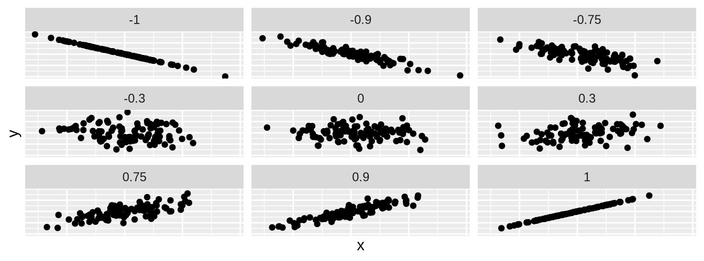
상관 계수는 moderndive 패키지의 get_correlation() 함수를 사용하여 계산할 수 있습니다. 이 경우 함수의 입력값은 상관 계수를 계산하려는 두 수치형 변수입니다.
우리는 ~ (물결표 기호)의 왼쪽에 결과 변수 이름을 두고, 오른쪽에 설명 변수 이름을 둡니다. 이는 R의 표뮬라 표기법(formula notation)으로 알려져 있습니다. 이 책의 후반부에서 회귀 분석을 다룰 때도 이와 동일한 “표뮬라” 구문을 사용할 것입니다.
evals_ch5 %>%
get_correlation(formula = score ~ bty_avg)# A tibble: 1 × 1
cor
<dbl>
1 0.187상관관계를 계산하는 또 다른 방법은 summarize() 내에서 cor() 요약 함수를 사용하는 것입니다.
evals_ch5 %>%
summarize(correlation = cor(score, bty_avg))우리의 경우, 상관 계수 0.187는 강의 평가 점수와 평균 “미모” 점수 사이의 관계가 “약한 양의 관계”임을 나타냅니다. 특히 상관 계수가 -1, 0, 1과 같은 극단적인 값에 가깝지 않을 때, 이를 해석하는 데에는 어느 정도 주관성이 개입됩니다. 상관 계수에 대한 여러분의 직관을 키우고 싶다면, 추가 자료 절에서 언급된 1980년대 스타일의 비디오 게임 “상관 계수 맞추기(Guess the Correlation)”를 플레이해 보세요.
탐색적 데이터 분석의 마지막 단계인 데이터 시각화를 수행해 봅시다. score와 bty_avg 변수가 모두 수치형이므로, 이 데이터를 시각화하기에 적절한 그래프는 산점도(scatterplot)입니다. geom_point()를 사용하여 시각화하고 결과는 그림 ?fig-numxplot1 에 표시하겠습니다. 또한 시각화의 오른쪽 상단에 있는 6개의 점을 상자로 강조하겠습니다.
ggplot(evals_ch5, aes(x = bty_avg, y = score)) +
geom_point() +
labs(x = "미모 점수",
y = "강의 평가 점수",
title = "강의 평가 점수와 미모 점수 관계의 산점도")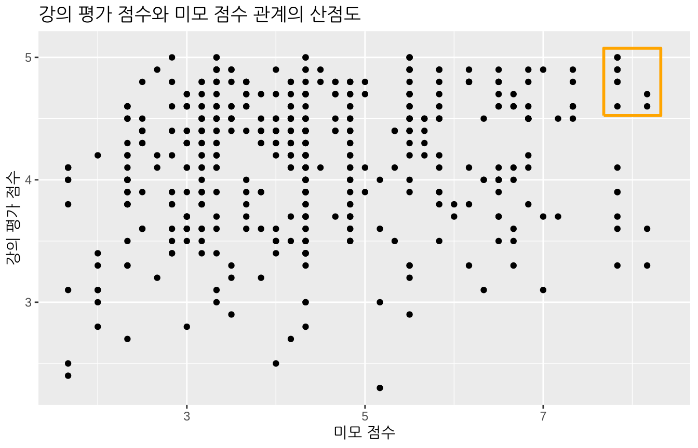
대부분의 “미모” 점수는 2점에서 8점 사이에 있고, 대부분의 강의 평가 점수는 3점에서 5점 사이에 있음을 알 수 있습니다. 또한 의견이 다를 수 있지만, 강의 평가 점수와 “미모” 점수 사이의 관계는 “약한 양의 관계”라고 생각됩니다. 이는 앞서 계산한 상관 계수 0.187와 일치합니다.
또한 이 플롯의 오른쪽 상단에 상자로 강조된 6개의 점이 있는 것처럼 보입니다. 하지만 실제로는 그렇지 않은데, 이 플롯이 중복 플로팅(overplotting) 문제를 겪고 있기 때문입니다. 오버플로팅 절에서 배웠듯이, 중복 플로팅은 여러 개의 점이 서로 바로 위에 겹쳐 쌓여 있어 이를 구분하기 어려울 때 발생합니다. 따라서 상자 안에 6개의 점만 있는 것처럼 보일 수 있지만, 실제로는 더 많습니다. 이 사실은 geom_point() 대신 geom_jitter()를 사용할 때만 명확해집니다. 그 결과를 그림 ?fig-numxplot2 에 표시하고, 그림 ?fig-numxplot1 과 동일한 작은 상자를 함께 두었습니다.
ggplot(evals_ch5, aes(x = bty_avg, y = score)) +
geom_jitter() +
labs(x = "미모 점수", y = "강의 평가 점수",
title = "강의 평가 점수와 미모 점수 관계의 산점도")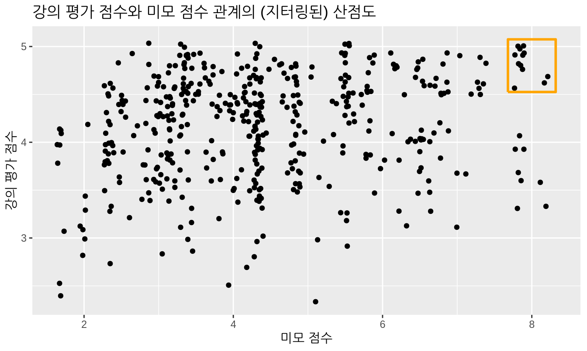
이제 그림 ?fig-numxplot1 에서 처럼 6개가 아니라 상자로 강조된 영역에 12개의 점이 있음이 분명해졌습니다. 오버플로팅 절의 중복 플로팅에서 보았듯이, 지터링은 각 점에 약간의 무작위 “밀어내기(nudge)”를 추가하여 겹친 점들을 떼어놓습니다. 또한 지터링은 엄격히 시각화 도구일 뿐이며, 데이터 프레임 evals_ch5의 원래 값을 변경하지 않는다는 점을 기억하세요. 하지만 앞으로의 설명을 단순하게 유지하기 위해 지터링된 버전보다는 일반 산점도만을 제시하겠습니다.
그림 ?fig-numxplot1 의 지터링되지 않은 산점도에 “가장 잘 맞는(best-fitting)” 직선을 추가하여 발전시켜 봅시다. 이 직선은 산점도에 그릴 수 있는 모든 가능한 직선 중에서 점들의 구름(cloud)을 가자 “잘” 통과하는 직선입니다. 그림 ?fig-numxplot1 을 생성한 ggplot() 코드에 새로운 geom_smooth(method = "lm", se = FALSE) 레이어를 추가하여 이를 수행합니다. method = "lm" 인자는 직선을 “선형 모델(linear model)”로 설정합니다. se = FALSE 인자는 표준 오차(standard error) 불확실성 막대를 표시하지 않도록 합니다. (표준 오차의 개념은 나중에 Statistical definitions 절에서 정의하겠습니다.)
ggplot(evals_ch5, aes(x = bty_avg, y = score)) +
geom_point() +
labs(x = "미모 점수", y = "강의 평가 점수",
title = "강의 평가 점수와 미모 점수 사이의 관계") +
geom_smooth(method = "lm", se = FALSE)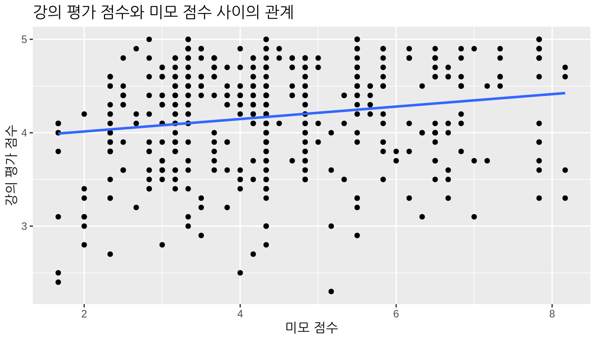
그림 ?fig-numxplot3 의 직선은 “회귀 직선(regression line)”이라고 불립니다. 회귀 직선은 두 수치형 변수(우리의 경우 결과 변수 score와 설명 변수 bty_avg 사이의 관계를 시각적으로 요약한 것입니다. 파란색 직선의 양(+)의 기울기는 강사의 “미모” 점수가 높을수록 강의 평가 점수도 더 높게 받는다는 점을 시사하며, 이는 앞서 관찰한 상관 계수 0.187와 일치합니다. 하지만 나중에 보겠지만 상관 계수와 회귀 직선의 기울기는 항상 같은 부호(양수 또는 음수)를 가지지만, 일반적으로 같은 값을 가지지는 않습니다.
또한 회귀 직선은 어떤 수학적 기준을 최소화한다는 점에서 “가장 잘 맞는(best-fitting)” 직선입니다. 가장 잘 맞는 직선 절에서 이 수학적 기준을 제시하겠지만, 이 섹션의 나머지 부분인 하나의 수치형 설명 변수를 이용한 회귀 분석을 모두 읽은 후에 해당 소섹션을 읽어보시길 권장합니다.
학습 확인
(LC5.1) 동일한 결과 변수 \(y\)인 score를 사용하되 설명 변수 \(x\)를 age(연령)로 바꾸어 새로운 탐색적 데이터 분석을 수행하세요. 다음 세 가지를 포함해야 함을 기억하세요.
- 원시 데이터 값 살펴보기
- 요약 통계량 계산하기
- 데이터 시각화 수행하기
이 탐색 결과를 바탕으로 연령과 강의 평가 점수 사이의 관계에 대해 무엇을 말할 수 있나요?
단순 선형 회귀
중고등학교 대수학 시간에 직선의 방정식이 \(y = a + b\cdot x\)라고 배웠던 것을 기억하실 겁니다. (여기서 \(\cdot\) 기호는 수학의 곱하기 기호인 \(\times\)와 동일합니다.) 이 책에서는 간결함을 위해 이후로도 \(\cdot\) 기호를 사용하겠습니다. 직선은 두 개의 계수(coefficients) \(a\)와 \(b\)에 의해 정의됩니다. 절편(intercept) 계수 \(a\)는 \(x = 0\)일 때의 \(y\) 값입니다. 기울기(slope) 계수 \(b\)는 \(x\)가 1만큼 증가할 때 \(y\)의 증가량을 의미합니다.
하지만 그림 ?fig-numxplot3 과 같은 회귀 직선을 정의할 때는 약간 다른 표기법을 사용합니다. 회귀 직선의 방정식은 \(\widehat{y} = b_0 + b_1 \cdot x\)입니다. 절편 계수는 \(b_0\)이며, 따라서 \(b_0\)는 \(x = 0\)일 때의 \(\widehat{y}\) 값입니다. \(x\)에 대한 기울기 계수는 \(b_1\)이며, 즉 \(x\)가 1만큼 증가할 때 \(\widehat{y}\)의 증가량을 나타냅니다. 왜 \(y\) 위에 “모자(hat)”를 씌웠을까요? 이는 회귀 분석에서 흔히 사용되는 표기법으로, 특정 \(x\) 값에 대한 회귀 직선 위의 값인 “적합값(fitted value)”임을 나타냅니다. 이에 대해서는 이어지는 관측값/적합값과 잔차 절에서 더 자세히 논의하겠습니다.
우리는 그림 ?fig-numxplot3 의 회귀 직선이 설명 변수 \(x\)인 bty_avg에 대해 양(+)의 기울기 \(b_1\)을 가진다는 것을 알고 있습니다. 왜 그럴까요? 강사들의 bty_avg 점수가 높을수록 강의 평가 score 점수도 높은 경향이 있기 때문입니다. 그렇다면 기울기 \(b_1\)의 수치적 값은 얼마일까요? 절편 \(b_0\)는 어떨까요? 이 두 값을 손으로 계산하지 말고 컴퓨터를 사용하여 구해 봅시다!
일련의 과정을 거쳐 선형 회귀 표(linear regression table)를 출력함으로써 절편 \(b_0\)와 bty_avg에 대한 기울기 \(b_1\)의 값을 얻을 수 있습니다. 이는 다음 두 단계로 수행됩니다.
- 먼저
lm()함수를 사용하여 선형 회귀 모델을 “적합(fit)”시키고 이를score_model에 저장합니다. moderndive패키지의get_regression_table()함수를score_model에 적용하여 회귀 표를 얻습니다.
# 회귀 모델 적합:
score_model <- lm(score ~ bty_avg, data = evals_ch5)
# 회귀 표 가져오기:
get_regression_table(score_model)| term | estimate | std_error | statistic | p_value | lower_ci | upper_ci |
|---|---|---|---|---|---|---|
| intercept | 3.880 | 0.076 | 50.96 | 0 | 3.731 | 4.030 |
| bty_avg | 0.067 | 0.016 | 4.09 | 0 | 0.035 | 0.099 |
먼저 표 ?tbl-regtable 의 회귀 표 출력을 해석하는 데 집중하고, 나중에 이를 생성한 코드를 다시 살펴보겠습니다. 표 ?tbl-regtable 의 estimate 열에는 절편 \(b_0\) = 3.88과 bty_avg에 대한 기울기 \(b_1\) = 0.067가 있습니다. 따라서 그림 ?fig-numxplot3 의 회귀 직선 방정식은 다음과 같습니다.
\[ \begin{aligned} \widehat{y} &= b_0 + b_1 \cdot x\\ \widehat{\text{score}} &= b_0 + b_{\text{bty}\_\text{avg}} \cdot\text{bty}\_\text{avg}\\ &= 3.88 + 0.067\cdot\text{bty}\_\text{avg} \end{aligned} \]
절편 \(b_0\) = 3.88은 강사의 “미모” 점수 bty_avg가 0인 강좌들의 평균 강의 평가 점수 \(\widehat{y}\) = \(\widehat{\text{score}}\)입니다. 기하학적으로 말하면 \(x=0\)일 때 직선이 \(y\)축과 만나는 지점입니다. 하지만 회귀 직선의 절편이 수학적 해석을 갖기는 하지만, 여기서는 실질적인(practical) 해석이 불가능하다는 점에 유의하세요. bty_avg가 0인 경우는 관측될 수 없는데, 이는 1점에서 10점 사이의 점수를 주는 6명 패널의 평균값이기 때문입니다. 게다가 그림 ?fig-numxplot3 의 회귀 직선 산점도를 보면 어떤 강사도 0에 가까운 “미모” 점수를 받지 않았습니다.
더 흥미로운 것은 bty_avg에 대한 기울기 \(b_1\) = \(b_{\text{bty}\_\text{avg}}\) = 0.067입니다. 이는 강의 평가 변수와 “미모” 점수 변수 사이의 관계를 요약해 줍니다. 부호가 양수(+)인 것에 주목하세요. 이는 두 변수 사이의 양의 관계를 시사하며, 미모 점수가 높은 교사가 강의 평가 점수도 더 높게 받는 경향이 있음을 의미합니다. 앞서 상관 계수가 0.187였음을 떠올려 보세요. 둘 다 동일한 양의 부호를 갖지만 값은 다릅니다. 상관관계의 해석은 “선형적 연관성의 강도”임을 다시 기억하세요. 기울기의 해석은 조금 다릅니다.
bty_avg가 1단위 증가할 때마다,score는 평균적으로 0.067단위만큼 연관되어 증가합니다.
우리는 단지 연관된(associated) 증가라고 말할 뿐, 반드시 인과적인(causal) 증가라고 하지는 않습니다. 예를 들어 높은 “미모” 점수가 그 자체로 직접적으로 높은 강의 평가 점수를 유발하는 것이 아닐 수도 있습니다. 대신 다음과 같은 상황이 가능할 수 있습니다: 부유한 배경을 가진 개인들이 더 탄탄한 교육 배경을 갖는 경향이 있어 강의 평가 점수가 높으면서, 동시에 이 부유한 개인들이 높은 “미모” 점수를 받는 경향이 있을 수도 있습니다. 즉, 두 변수가 강하게 연관되어 있다고 해서 반드시 한 변수가 다른 변수를 유발한다는 의미는 아닙니다. 이는 “상관관계가 반드시 인과관계를 의미하지는 않는다”라는 자주 인용되는 문구로 요약됩니다. 이 아이디어에 대해서는 상관관계가 반드시 인과관계를 의미하지는 않는다 절에서 더 자세히 논의합니다.
또한 우리는 이 연관된 증가가 평균적으로 0.067단위의 강의 평가 score라고 말하는데, 그 이유는 bty_avg 점수가 1단위 차이 나는 두 강사의 실제 강의 평가 점수 차이가 반드시 정확히 0.067는 아닐 것이기 때문입니다. 기울기 0.067가 의미하는 바는 가능한 모든 강좌에 걸쳐, “미모” 점수가 1만큼 차이 나는 두 강사 사이의 강의 평가 점수의 평균적인 차이가 0.067라는 것입니다.
이제 표 ?tbl-regtable 의 estimate 열에 있는 값들을 사용하여 그림 ?fig-numxplot3 의 회귀 직선 방정식을 계산하는 법과 그 결과인 절편 및 기울기를 해석하는 법을 배웠으니, 이 표를 생성한 코드를 다시 살펴보겠습니다.
# 회귀 모델 적합:
score_model <- lm(score ~ bty_avg, data = evals_ch5)
# 회귀 표 가져오기:
get_regression_table(score_model)첫째, lm() 함수를 사용하여 data에 선형 회귀 모델을 “적합”시키고 이를 score_model로 저장합니다. 여기서 “적합시킨다”는 말은 “이 데이터에 가장 잘 맞는 직선을 찾는다”는 의미입니다. lm은 “선형 모델(linear model)”의 약자이며 다음과 같이 사용됩니다: lm(y ~ x, data = 데이터_프레임_이름)
y는 결과 변수이며 뒤에 물결표~가 옵니다. 우리의 경우y는score로 설정되었습니다.x는 설명 변수입니다. 우리의 경우x는bty_avg로 설정되었습니다.y ~ x의 조합을 모델 포뮬라(model formula)라고 부릅니다. (이때y와x의 순서에 유의하세요. 우리의 경우 모델 포뮬라는score ~ bty_avg입니다. 이러한 모델 포뮬라는 앞서 탐색적 데이터 분석 절에서get_correlation()함수를 사용하여 상관 계수를 계산할 때도 보았습니다.데이터_프레임_이름은 변수y와x를 포함하고 있는 데이터 프레임의 이름입니다. 우리의 경우데이터_프레임_이름은evals_ch5데이터 프레임입니다.
둘째, score_model에 저장된 모델을 가져와 moderndive 패키지의 get_regression_table() 함수를 적용하여 표 ?tbl-regtable 과 같은 회귀 표를 얻습니다. 이 함수는 컴퓨터 프로그래밍에서 래퍼 함수(wrapper function)라고 알려진 것의 한 예입니다. 래퍼 함수는 기존의 다른 함수들을 가져와 내부 작동 방식을 숨긴 채 하나의 함수로 “감싸(wrap)” 놓은 것입니다. 이 개념은 그림 ?fig-moderndive-figure-wrapper 에 잘 나타나 있습니다.
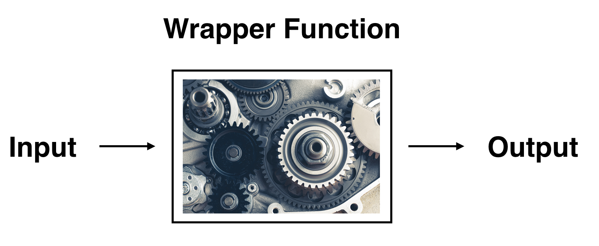
따라서 여러분은 입력이 무엇이고 출력이 무엇인지만 걱정하면 되며, 나머지 세부 사항은 “자동차 엔진룸 안”의 일로 남겨두면 됩니다. 우리의 회귀 모델링 예시에서 get_regression_table() 함수는 저장된 lm() 선형 회귀 모델을 입력으로 받아 회귀 표 데이터 프레임을 출력으로 반환합니다. get_regression_table() 함수의 내부 작동 방식에 대해 더 알고 싶다면 get_regression_x() 함수들 절을 참고하세요.
마지막으로 표 ?tbl-regtable 의 나머지 5개 열인 std_error, statistic, p_value, lower_ci, upper_ci가 무엇인지 궁금할 것입니다. 이들은 각각 표준 오차(standard error), 검정 통계량(test statistic), p-값(p-value), 95% 신뢰 구간의 하한, 95% 신뢰 구간의 상한입니다. 이들은 우리 결과의 통계적 유의성(statistical significance)과 실질적 유의성(practical significance) 모두에 대해 알려줍니다. 이는 통계적 관점에서 우리 결과가 얼마나 “의미 있는지”를 나타냅니다. 일단 이 개념들은 제쳐두고 회귀 분석을 위한 추론 장 회귀 분석을 위한 (통계적 추론에서 다시 다루도록 하겠습니다. 표본 추출 장의 표준 오차, 붓스트랩과 신뢰 구간 장의 신뢰 구간, 그리고 가설 검정 장의 가설 검정과 \(p\)-값을 모두 배운 후에 다시 살펴보겠습니다.
학습 확인
(LC5.2) age를 새로운 설명 변수 \(x\)로 사용하여 lm(score ~ age, data = evals_ch5)로 새로운 단순 선형 회귀 분석을 수행하세요. get_regression_table() 함수를 적용하여 회귀 표로부터 “가장 잘 맞는” 직선에 대한 정보를 얻으세요. 회귀 분석 결과가 앞서 수행한 탐색적 데이터 분석 결과와 어떻게 일치하나요?
관측값/적합값과 잔차
우리는 방금 get_regression_table() 함수가 생성한 회귀 표의 estimate 열을 통해 회귀 직선의 절편과 기울기 값을 얻는 방법을 보았습니다. 이제 개별 관측치에 대한 정보를 알고 싶다고 가정해 봅시다. 예를 들어 evals_ch5 데이터 프레임에 있는 463개 강좌 중 21번째 강좌에 집중해 보겠습니다(표 ?tbl-instructor-21).
| ID | score | bty_avg | age |
|---|---|---|---|
| 21 | 4.9 | 7.33 | 31 |
이 강사의 “미모” 점수 bty_avg가 7.333일 때, 이에 해당하는 회귀 직선 위의 값 \(\widehat{y}\)는 얼마일까요? 그림 ?fig-numxplot4 에서는 이 21번째 강좌의 강사에 해당하는 세 가지 값을 표시하고 각각의 통계적 명칭을 부여했습니다.
- 원: 관측값(observed value) \(y\) = 4.9는 이 강좌 강사의 실제 강의 평가 점수입니다.
- 사각형: 적합값(fitted value) \(\widehat{y}\)는 \(x\) =
bty_avg= 7.333일 때 회귀 직선 위의 값입니다. 이 값은 이전 회귀 표의 절편과 기울기를 사용하여 계산됩니다.
\[\widehat{y} = b_0 + b_1 \cdot x = 3.88 + 0.067 \cdot 7.333 = 4.369\]
- 화살표: 이 화살표의 길이는 잔차(residual)이며, 관측값 \(y\)에서 적합값 \(\widehat{y}\)를 빼서 계산합니다. 잔차는 특정 관측치에 대한 모델의 오차 또는 “적합도 부족(lack of fit)”으로 생각할 수 있습니다. 이 강좌 강사의 경우 \(y - \widehat{y}\) = 4.9 - 4.369 = 0.531입니다.
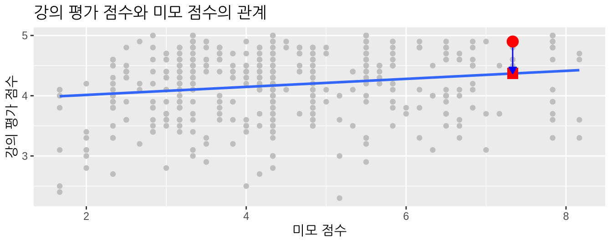
이제 연구에 포함된 모든 463개 강좌에 대해 적합값 \(\widehat{y} = b_0 + b_1 \cdot x\)와 잔차 \(y - \widehat{y}\)를 모두 계산하고 싶다고 가정해 봅시다. 각 강좌는 evals_ch5 데이터 프레임의 463개 행 중 하나에 해당하며, 동시에 그림 ?fig-numxplot4 의 회귀 플롯에 있는 463개 점 중 하나에 해당함을 기억하세요.
앞서 수행한 계산을 직접 463번 반복할 수도 있지만, 그것은 매우 지루하고 시간이 많이 걸리는 일일 것입니다. 대신 컴퓨터와 get_regression_points() 함수를 사용하여 이를 수행해 봅시다. get_regression_table() 함수와 마찬가지로 get_regression_points() 함수도 “래퍼” 함수입니다. 하지만 이 함수는 다른 결과를 반환합니다. 앞선 섹션에서 lm() 모델을 저장했던 score_model에 get_regression_points() 함수를 적용해 봅시다. 간결함을 위해 표 ?tbl-regression-points-1 에는 21번째부터 24번째 강좌의 결과만 제시합니다.
regression_points <- get_regression_points(score_model)
regression_points| ID | score | bty_avg | score_hat | residual |
|---|---|---|---|---|
| 21 | 4.9 | 7.33 | 4.37 | 0.531 |
| 22 | 4.6 | 7.33 | 4.37 | 0.231 |
| 23 | 4.5 | 7.33 | 4.37 | 0.131 |
| 24 | 4.4 | 5.50 | 4.25 | 0.153 |
개별 열을 검토하고 그림 ?fig-numxplot4 의 요소들과 대조해 봅시다.
score열은 관측된 결과 변수 \(y\)를 나타냅니다. 이는 463개 검은색 점의 y축 위치입니다.bty_avg열은 설명 변수 \(x\)의 값을 나타냅니다. 이는 463개 검은색 점의 x축 위치입니다.score_hat열은 적합값 \(\widehat{y}\)를 나타냅니다. 이는 463개 \(x\) 값에 대해 회귀 직선 위에 대응하는 값입니다.residual열은 잔차 \(y - \widehat{y}\)를 나타냅니다. 이는 463개 검은색 점과 회귀 직선 사이의 수직 거리입니다.
evals_ch5 데이터셋의 21번째 강좌 강사(표의 첫 번째 행)에 대해 했던 것처럼, 24번째 강좌 강사(표 ?tbl-regression-points-1 의 네 번째 행)에 대해서도 계산을 반복해 봅시다.
score= 4.4는 이 강좌 강사의 관측된 강의 평가 점수 \(y\)입니다.bty_avg= 5.50는 이 강좌 강사의 설명 변수bty_avg(\(x\) 값입니다.score_hat= 4.25 = 3.88 + 0.067 \(\cdot\) 5.50는 이 강좌 강사에 대한 회귀 직선 위의 적합값 \(\widehat{y}\)입니다.residual= 0.153 = 4.4 - 4.25는 이 강사의 잔차 값입니다. 즉, 이 강좌 강사의 경우 모델의 적합값은 실제 강의 평가 점수와 0.153만큼 차이가 났습니다.
이제 원하신다면 가장 잘 맞는 직선 절로 건너뛰어 “가장 잘 맞는” 회귀 직선을 만드는 과정에 대해 배울 수 있습니다. 미리 귀띔해 드리자면, “가장 잘 맞는” 직선이란 점들을 통과하도록 그을 수 있는 모든 가능한 직선 중에서 잔차 제곱합(sum of squared residuals)을 최소화하는 직선을 의미합니다. 하나의 범주형 설명 변수 절에서는 범주형 설명 변수와 수치형 결과 변수가 있는 또 다른 일반적인 시나리오를 논의하겠습니다.
학습 확인
(LC5.3) age를 설명 변수 \(x\)로 사용했던 모델의 잔차 데이터 프레임을 생성하세요.
하나의 범주형 설명 변수
기대 수명이 전 세계 모든 국가에서 동일하지 않다는 것은 안타까운 사실입니다. 국제 개발 기구들은 정부가 이 문제를 해결하기 위해 어디에 자원을 할당해야 할지 파악하기 위해 기대 수명의 차이를 연구하는 데 관심이 많습니다. 이 섹션에서는 두 가지 방식으로 기대 수명의 차이를 탐색해 보겠습니다.
- 대륙 간 차이: 전 세계 사람이 거주하는 5개 대륙(아프리카, 미주, 아시아, 유럽, 오세아니아 사이에 평균 기대 수명의 유의미한 차이가 있는가?
- 대륙 내 차이: 세계 5개 대륙 내에서 기대 수명은 어떻게 변하는가? 예를 들어, 아프리카 국가들 사이의 기대 수명 분포가 아시아 국가들 사이의 기대 수명 분포보다 더 넓은가?
이러한 질문에 답하기 위해 gapminder 패키지에 포함된 gapminder 데이터 프레임을 사용할 것입니다. 이 데이터셋은 1952년부터 2007년 사이 5년 간격으로 조사된 142개 국가의 기대 수명, 1인당 GDP, 인구와 같은 국제 개발 통계를 담고 있습니다. 앞서 Gapminder 데이터 절의 시각화 원리에서 그림 ?fig-gapminder 를 통해 이 데이터의 일부를 시각화했던 것을 기억하실 겁니다.
우리는 다시 기초 회귀 분석을 위해 이 데이터를 사용할 것인데, 이번에는 이전 하나의 수치형 설명 변수 절에서 사용했던 수치형 설명 변수 모델과 달리 범주형 설명 변수 \(x\)를 사용할 것입니다.
- 수치형 결과 변수 \(y\) (국가별 기대 수명)
- 단일 범주형 설명 변수 \(x\) (해당 국가가 속한 대륙)
설명 변수 \(x\)가 범주형일 때 “가장 잘 맞는” 회귀 직선의 개념은 설명 변수 \(x\)가 수치형이었던 이전 하나의 수치형 설명 변수 절의 개념과는 약간 다릅니다. 선형 회귀 절에서 이러한 차이점을 곧 살펴보겠지만, 그전에 먼저 탐색적 데이터 분석을 수행해 봅시다.
탐색적 데이터 분석
142개 국가에 대한 데이터는 gapminder 패키지의 gapminder 데이터 프레임에서 찾을 수 있습니다. 하지만 상황을 단순하게 유지하기 위해, 2007년에 해당하는 관측치/행들만 filter()해 봅시다. 또한 이번 장에서 고려할 변수들만 select()하겠습니다. 이 데이터를 gapminder2007이라는 새로운 데이터 프레임에 저장하겠습니다.
library(gapminder)
gapminder2007 <- gapminder %>%
filter(year == 2007) %>%
select(country, lifeExp, continent, gdpPercap)[1] 54.8탐색적 데이터 분석의 첫 번째 단계인 원시 데이터 값 살펴보기를 수행해 봅시다. 데이터 프레임 탐색하기 절에서 배운 것처럼 RStudio의 스프레드시트 뷰어 또는 glimpse() 명령을 사용할 수 있습니다.
glimpse(gapminder2007)Rows: 142
Columns: 4
$ country <fct> "Afghanistan", "Albania", "Algeria", "Angola", "Argentina", …
$ lifeExp <dbl> 43.8, 76.4, 72.3, 42.7, 75.3, 81.2, 79.8, 75.6, 64.1, 79.4, …
$ continent <fct> Asia, Europe, Africa, Africa, Americas, Oceania, Europe, Asi…
$ gdpPercap <dbl> 975, 5937, 6223, 4797, 12779, 34435, 36126, 29796, 1391, 336…Rows: 142는 gapminder2007에 142개의 행/관측치가 있음을 나타내며, 각 행은 하나의 국가에 해당합니다. 즉, 관측 단위는 개별 국가입니다. 또한 continent 변수가 <fct> 타입임을 알 수 있는데, 이는 범주형 변수를 인코딩하는 R의 방식인 팩터(factor)를 의미합니다.
gapminder에 포함된 모든 변수에 대한 전체 설명은 도움말 파일(콘솔에서 ?gapminder 실행)을 통해 볼 수 있습니다. 여기서는 우리가 gapminder2007에서 선택한 4개 변수만 자세히 설명하겠습니다.
country: 데이터셋에 있는 142개 국가를 구분하는 데 사용되는 문자형/텍스트 식별 변수입니다.lifeExp: 해당 국가의 출생 시 기대 수명을 나타내는 수치형 변수입니다. 이것이 우리가 관심을 갖는 결과 변수 \(y\)입니다.continent: 5개의 레벨을 가진 범주형 변수입니다. 여기서 “레벨(levels)”은 아프리카, 아시아, 미주, 유럽, 오세아니아라는 가능한 범주들에 해당합니다. 이것이 우리가 관심을 갖는 설명 변수 \(x\)입니다.gdpPercap: 미국 달러 기준으로 물가 상승률이 조정된 해당 국가의 1인당 GDP를 나타내는 수치형 변수입니다. 이 변수는 이 소섹션 끝에 있는 학습 확인 문제에서 또 다른 결과 변수 \(y\)로 사용할 것입니다.
표 ?tbl-model2-data-preview 에서 142개 국가 중 무작위로 추출한 5개 샘플을 살펴봅시다.
gapminder2007 %>% sample_n(size = 5)| country | lifeExp | continent | gdpPercap |
|---|---|---|---|
| Togo | 58.4 | Africa | 883 |
| Sao Tome and Principe | 65.5 | Africa | 1598 |
| Congo, Dem. Rep. | 46.5 | Africa | 278 |
| Lesotho | 42.6 | Africa | 1569 |
| Bulgaria | 73.0 | Europe | 10681 |
무작위 샘플링이기 때문에 여러분이 보게 될 5개의 행은 위에 표시된 것과 다를 수 있습니다. 이제 gapminder2007 데이터 프레임의 원시 값들을 보고 데이터에 대한 감을 잡았으니, 요약 통계량 계산으로 넘어가 봅시다. 다시 한번 skimr 패키지의 skim() 함수를 적용해 보겠습니다. 앞선 EDA에서 보았듯이 이 함수는 데이터 프레임을 훑어보고 자주 쓰이는 요약 통계량을 반환합니다. gapminder2007 데이터 프레임을 가져와서 결과 변수 lifeExp와 설명 변수 continent만 select()한 뒤 skim() 함수로 파이프 연결을 해보겠습니다.
gapminder2007 %>%
select(lifeExp, continent) %>%
skim()Skim summary statistics
n obs: 142
n variables: 2
── Variable type:factor
variable missing complete n n_unique top_counts ordered
continent 0 142 142 5 Afr: 52, Asi: 33, Eur: 30, Ame: 25 FALSE
── Variable type:numeric
variable missing complete n mean sd p0 p25 p50 p75 p100
lifeExp 0 142 142 67.01 12.07 39.61 57.16 71.94 76.41 82.6이제 skim() 출력 결과는 범주형 변수(Variable type:factor)와 수치형 변수(Variable type:numeric)에 대한 요약을 따로 보고합니다. 범주형 변수 continent의 경우 다음과 같이 보고합니다.
missing,complete,n: 이전과 마찬가지로 결측값, 완전한 값, 전체 값의 개수입니다.n_unique: 이 변수의 고유한 레벨 개수로, 아프리카, 아시아, 미주, 유럽, 오세아니아에 해당합니다. 이는 각 대륙별로 데이터에 얼마나 많은 국가가 있는지 나타냅니다.top_counts: 이 경우 상위 4개의 카운트를 보여줍니다. 아프리카 52개국, 아시아 33개국, 유럽 30개국, 미주 25개국입니다. 표시되지 않은 오세아니아는 2개국입니다.ordered: 범주형 변수가 “순서형(ordinal)”인지, 즉 인코딩된 계층 구조(예: 낮음, 중간, 높음)가 있는지 알려줍니다. 이 경우continent는 순서가 없습니다.
수치형 변수인 lifeExp의 요약 통계량으로 시선을 돌려보면, 2007년 전 세계 기대 수명의 중앙값은 71.94세였습니다. 즉, 전 세계 국가의 절반(71개국)은 기대 수명이 71.94세 미만이었습니다. 그러나 평균 기대 수명은 67.01세로 이보다 낮습니다. 왜 평균 기대 수명이 중앙값보다 낮을까요?
탐색적 데이터 분석의 마지막 단계인 데이터 시각화를 수행하여 이 질문에 답해 봅시다. 그림 ?fig-lifeExp2007hist 에서 결과 변수 \(y\) = lifeExp의 분포를 시각화해 보겠습니다.
ggplot(gapminder2007, aes(x = lifeExp)) +
geom_histogram(binwidth = 5, color = "white") +
labs(x = "기대 수명", y = "국가 수",
title = "전 세계 기대 수명 분포 히스토그램")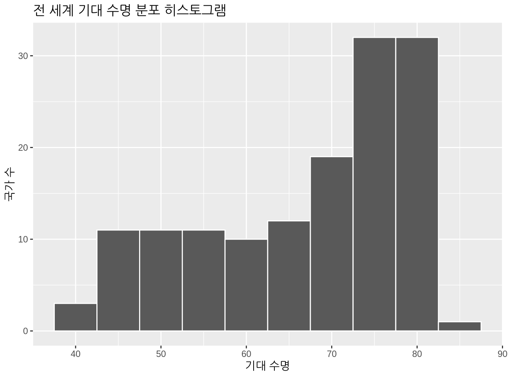
데이터가 왼쪽으로 치우친(left-skewed), 또는 음의 방향으로 치우친 것을 볼 수 있습니다. 기대 수명이 낮은 몇몇 국가들이 평균 기대 수명을 깎아먹고 있습니다. 그러나 중앙값은 이러한 이상치의 영향을 덜 받기 때문에, 이 경우 중앙값이 평균보다 크게 나타납니다.
하지만 우리의 목적은 대륙 간 및 대륙 내 기대 수명을 비교하는 것임을 기억하세요. 즉, 시각화에 continent 변수의 개념을 포함해야 합니다. 면 분할 히스토그램을 사용하면 이를 쉽게 수행할 수 있습니다. 분할 절에서 배웠듯이 면 분할은 다른 변수의 값에 따라 시각화를 분할할 수 있게 해줍니다. facet_wrap(~ continent, nrow = 2) 레이어를 추가하여 그 결과를 그림 ?fig-catxplot0b 에 나타냈습니다.
ggplot(gapminder2007, aes(x = lifeExp)) +
geom_histogram(binwidth = 5, color = "white") +
labs(x = "기대 수명",
y = "국가 수",
title = "전 세계 기대 수명 분포 히스토그램") +
facet_wrap(~ continent, nrow = 2)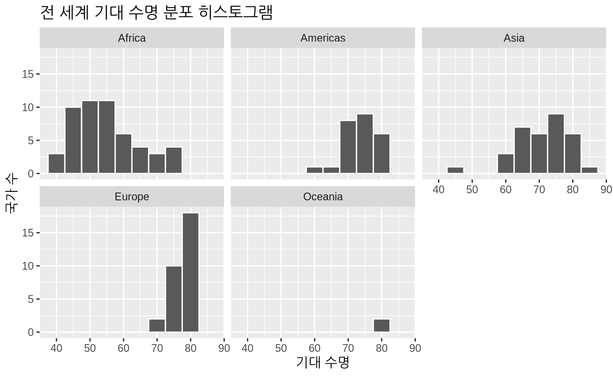
안타깝게도 아프리카의 기대 수명 분포는 다른 대륙보다 훨씬 낮으며, 유럽의 기대 수명은 더 높고 변동성도 크지 않음을 알 수 있습니다. 반면 아시아와 아프리카는 기대 수명의 변동이 가장 큽니다. 오세아니아는 변동이 가장 적지만, 오세아니아에는 호주와 뉴질랜드 두 국가뿐이라는 점을 유념하세요.
범주형 변수에 따라 나뉜 수치형 변수의 분포를 시각화하는 또 다른 방법은 나란히 놓인 박스 플롯을 사용하는 것입니다. 그림 ?fig-catxplot1 에서는 범주형 변수인 continent를 \(x\)축에, 각 대륙 내의 다양한 기대 수명을 \(y\)축에 매핑했습니다.
ggplot(gapminder2007, aes(x = continent, y = lifeExp)) +
geom_boxplot() +
labs(x = "대륙", y = "기대 수명",
title = "대륙별 기대 수명")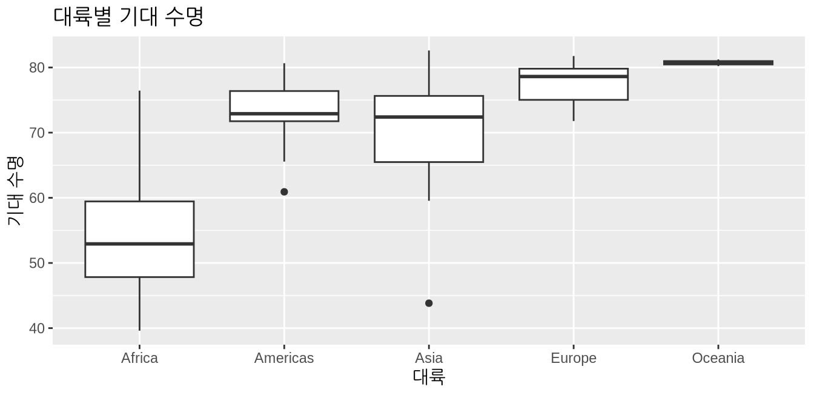
어떤 사람들은 면 분할 히스토그램보다 박스 플롯을 사용하여 범주형 변수의 레벨 간 수치형 변수의 분포를 비교하는 것을 선호합니다. 가상의 수평선을 그어 범주형 변수의 레벨 사이를 빠르게 비교할 수 있기 때문입니다. 예를 들어 그림 ?fig-catxplot1 에서 \(y = 80\)에 가상의 수평선을 그어보면, 오세아니아의 중앙 기대 수명이 가장 높다는 것을 금방 확인할 수 있습니다. 또한 그림 ?fig-catxplot0b 의 히스토그램에서 관찰했듯이, 아프리카와 아시아는 사분위수 범위(IQR, 박스의 높이)가 넓어 기대 수명의 변동이 가장 크다는 것을 알 수 있습니다.
하지만 박스 내부의 굵은 가로선은 평균이 아니라 중앙값이라는 점을 기억하는 것이 중요합니다. 예를 들어 아시아의 경우, 중앙 기대 수명은 약 72세입니다. 이는 아시아 국가 전체의 절반은 기대 수명이 72세 미만이고, 나머지 절반은 72세 이상임을 의미합니다.
데이터 전처리를 통해 각 대륙별 기대 수명의 중앙값과 평균을 계산하고 그 결과를 표 ?tbl-catxplot0 에 나타내 봅시다.
lifeExp_by_continent <- gapminder2007 %>%
group_by(continent) %>%
summarize(median = median(lifeExp),
mean = mean(lifeExp))| continent | median | mean |
|---|---|---|
| Africa | 52.9 | 54.8 |
| Americas | 72.9 | 73.6 |
| Asia | 72.4 | 70.7 |
| Europe | 78.6 | 77.6 |
| Oceania | 80.7 | 80.7 |
두 번째 열인 중앙값 순서를 살펴보면, 아프리카가 가장 낮고, 미주와 아시아가 비슷한 중앙값으로 그 뒤를 이으며, 그다음으로 유럽, 오세아니아 순입니다. 이 순서는 그림 ?fig-catxplot1 의 박스 플롯 내부 굵은 검은색 선의 위치와 일치합니다.
이제 세 번째 열인 평균(mean 값으로 시선을 돌려봅시다. 아프리카의 평균 기대 수명인 54.8를 비교를 위한 기준점(baseline for comparison)으로 삼아 다른 4개 대륙의 평균 기대 수명과 비교하고, 그 값들을 표 ?tbl-continent-mean-life-expectancies 에 정리해 보겠습니다. 이 표는 이 섹션의 뒷부분에서 다시 살펴보겠습니다.
- 미주의 경우: 73.6 - 54.8 = 18.8년 더 높습니다.
- 아시아의 경우: 70.7 - 54.8 = 15.9년 더 높습니다.
- 유럽의 경우: 77.6 - 54.8 = 22.8년 더 높습니다.
- 오세아니아의 경우: 80.7 - 54.8 = 25.9년 더 높습니다.
| continent | mean | Difference versus Africa |
|---|---|---|
| Africa | 54.8 | 0 |
| Americas | 73.6 | 0 |
| Asia | 70.7 | 0 |
| Europe | 77.6 | 0 |
| Oceania | 80.7 | 0 |
학습 확인
(LC5.4) 동일한 설명 변수 \(x\)인 continent를 사용하되, gdpPercap을 새로운 결과 변수 \(y\)로 삼아 새로운 탐색적 데이터 분석을 수행하세요. 이 탐색 결과를 바탕으로 대륙 간 1인당 GDP 차이에 대해 무엇을 말할 수 있나요?
선형 회귀
단순 선형 회귀 절에서 수치형 결과 변수 \(y\)와 수치형 설명 변수 \(x\) 사이의 관계를 모델링하는 단순 선형 회귀를 소개했습니다. 이번 기대 수명 예제에서는 수치형 대신 범주형 설명 변수인 continent가 있습니다. 우리의 모델은 그림 ?fig-numxplot3 과 같은 “가장 잘 맞는” 회귀 직선을 산출하는 것이 아니라, 비교 기준점에 대한 오프셋(offsets) 을 산출할 것입니다.
강의 평가 점수와 “미모” 점수 사이의 관계를 연구했을 때처럼, 이 모델에 대한 회귀 표를 출력해 봅시다. 이는 다음 두 단계로 수행됨을 기억하세요.
lm(y ~ x, data)함수를 사용하여 선형 회귀 모델을 “적합”시키고 이를lifeExp_model에 저장합니다.moderndive패키지의get_regression_table()함수를lifeExp_model에 적용하여 회귀 표를 얻습니다.
lifeExp_model <- lm(lifeExp ~ continent, data = gapminder2007)
get_regression_table(lifeExp_model)| term | estimate | std_error | statistic | p_value | lower_ci | upper_ci |
|---|---|---|---|---|---|---|
| intercept | 54.8 | 1.02 | 53.45 | 0 | 52.8 | 56.8 |
| continent: Americas | 18.8 | 1.80 | 10.45 | 0 | 15.2 | 22.4 |
| continent: Asia | 15.9 | 1.65 | 9.68 | 0 | 12.7 | 19.2 |
| continent: Europe | 22.8 | 1.70 | 13.47 | 0 | 19.5 | 26.2 |
| continent: Oceania | 25.9 | 5.33 | 4.86 | 0 | 15.4 | 36.5 |
다시 한번 표 ?tbl-catxplot4b 의 term과 estimate 열의 값들에 집중해 봅시다. 왜 이제는 5개의 행이 있을까요? 하나씩 분석해 보겠습니다.
intercept는 아프리카 국가들의 평균 기대 수명인 54.8년에 해당합니다.continent: Americas는 미주 국가들에 해당하며, 그 값인 +18.8는 표 ?tbl-continent-mean-life-expectancies 에서 보여준 아프리카 대비 평균 기대 수명의 차이와 동일합니다. 즉, 미주 국가들의 평균 기대 수명은 \(54.8 + 18.8 = 73.6\)입니다.continent: Asia는 아시아 국가들에 해당하며, 그 값인 +15.9는 표 ?tbl-continent-mean-life-expectancies 에서 보여준 아프리카 대비 평균 기대 수명의 차이와 동일합니다. 즉, 아시아 국가들의 평균 기대 수명은 \(54.8 + 15.9 = 70.7\)입니다.continent: Europe은 유럽 국가들에 해당하며, 그 값인 +22.8는 표 ?tbl-continent-mean-life-expectancies 에서 보여준 아프리카 대비 평균 기대 수명의 차이와 동일합니다. 즉, 유럽 국가들의 평균 기대 수명은 \(54.8 + 22.8 = 77.6\)입니다.continent: Oceania는 오세아니아 국가들에 해당하며, 그 값인 +25.9는 표 ?tbl-continent-mean-life-expectancies 에서 보여준 아프리카 대비 평균 기대 수명의 차이와 동일합니다. 즉, 오세아니아 국가들의 평균 기대 수명은 \(54.8 + 25.9 = 80.7\)입니다.
요약하자면, 표 ?tbl-catxplot4b 의 estimate 열에 있는 5개의 값은 “비교 기준점” 대륙인 아프리카(절편)와 나머지 4개 대륙(미주, 아시아, 유럽, 오세아니아)에 대한 이 기준점으로부터의 4개의 “오프셋”에 해당합니다.
여기서 왜 아프리카가 “비교를 위한 기준점” 그룹으로 선택되었는지 궁금할 것입니다. 이는 단지 5개 대륙 중에서 알파벳 순서가 가장 빠르기 때문일 뿐입니다. 기본적으로 R은 팩터/범주형 변수를 알파벳 순서로 배열합니다. 만약 forcats 패키지를 사용하여 continent 변수의 팩터 “레벨”을 조작한다면 이 기준점 그룹을 다른 대륙으로 바꿀 수 있습니다. 예시는 R for Data Science (Grolemund and Wickham 2017)의 제15장을 참고하세요.
이제 적합값에 대한 방정식 \(\widehat{y} = \widehat{\text{life exp}}\)를 써 봅시다.
\[ \begin{aligned} \widehat{y} = \widehat{\text{life exp}} &= b_0 + b_{\text{Amer}}\cdot\mathbb{1}_{\text{Amer}}(x + b_{\text{Asia}}\cdot\mathbb{1}_{\text{Asia}}(x + \\ & \qquad b_{\text{Euro}}\cdot\mathbb{1}_{\text{Euro}}(x + b_{\text{Ocean}}\cdot\mathbb{1}_{\text{Ocean}}(x)\\ &= 54.8 + 18.8\cdot\mathbb{1}_{\text{Amer}}(x + 15.9\cdot\mathbb{1}_{\text{Asia}}(x + \\ & \qquad 22.8\cdot\mathbb{1}_{\text{Euro}}(x + 25.9\cdot\mathbb{1}_{\text{Ocean}}(x) \end{aligned} \]
우와! 꽤 겁나게 생겼네요! 하지만 걱정하지 마세요. 각 요소가 무엇을 의미하는지 이해하고 나면 상황은 아주 단순해집니다. 먼저 \(\mathbb{1}_{A}(x)\)는 수학에서 “지시 함수(indicator function)”라고 알려진 것입니다. 이는 다음 두 가지 값 중 하나(0 또는 1)만을 반환합니다.
\[ \mathbb{1}_{A}(x) = \left\{ \begin{array}{ll} 1 & \text{만약 } x\text{가 } A\text{에 속한다면} \\ 0 & \text{그렇지 않다면} \end{array} \right. \]
통계 모델링 맥락에서 이는 더미 변수(dummy variable)라고도 불립니다. 우리의 경우, 첫 번째 지시 변수인 \(\mathbb{1}_{\text{Amer}}(x)\)를 생각해 봅시다. 이 지시 함수는 국가가 미주 대륙에 속하면 1을 반환하고, 그렇지 않으면 0을 반환합니다.
\[ \mathbb{1}_{\text{Amer}}(x) = \left\{ \begin{array}{ll} 1 & \text{만약 국가 } x\text{가 미주 대륙에 속한다면} \\ 0 & \text{그렇지 않다면}\end{array} \right. \]
둘째, \(b_0\)는 이전과 마찬가지로 절편에 해당하며, 이 경우 아프리카에 속한 모든 국가의 평균 기대 수명입니다. 셋째, \(b_{\text{Amer}}\), \(b_{\text{Asia}}\), \(b_{\text{Euro}}\), \(b_{\text{Ocean}}\)은 표 ?tbl-catxplot4b 의 회귀 표 출력물에 있는 “비교를 위한 기준점 대비 4개의 오프셋”인 continent: Americas, continent: Asia, continent: Europe, continent: Oceania를 나타냅니다.
이제 이 모든 것을 종합하여 아프리카에 있는 국가의 적합값 \(\widehat{y} = \widehat{\text{life exp}}\)를 계산해 봅시다. 그 국가는 아프리카에 있으므로 4개의 지시 함수 \(\mathbb{1}_{\text{Amer}}(x)\), \(\mathbb{1}_{\text{Asia}}(x)\), \(\mathbb{1}_{\text{Euro}}(x)\), \(\mathbb{1}_{\text{Ocean}}(x)\)는 모두 0이 되며, 따라서 다음과 같습니다.
\[ \begin{aligned} \widehat{\text{life exp}} &= b_0 + b_{\text{Amer}}\cdot\mathbb{1}_{\text{Amer}}(x + b_{\text{Asia}}\cdot\mathbb{1}_{\text{Asia}}(x) + \\ & \qquad b_{\text{Euro}}\cdot\mathbb{1}_{\text{Euro}}(x + b_{\text{Ocean}}\cdot\mathbb{1}_{\text{Ocean}}(x)\\ &= 54.8 + 18.8\cdot\mathbb{1}_{\text{Amer}}(x + 15.9\cdot\mathbb{1}_{\text{Asia}}(x) + \\ & \qquad 22.8\cdot\mathbb{1}_{\text{Euro}}(x + 25.9\cdot\mathbb{1}_{\text{Ocean}}(x)\\ &= 54.8 + 18.8\cdot 0 + 15.9\cdot 0 + 22.8\cdot 0 + 25.9\cdot 0\\ &= 54.8 \end{aligned} \]
즉, 남는 것은 절편 \(b_0\)뿐이며, 이는 아프리카 국가들의 평균 기대 수명인 54.8년에 해당합니다. 다음으로 미주 대륙에 있는 국가를 고려한다고 해봅시다. 이 경우 미주에 대한 지시 함수 \(\mathbb{1}_{\text{Amer}}(x)\)만 1이 되고 나머지는 모두 0이 되며, 따라서 다음과 같습니다.
\[ \begin{aligned} \widehat{\text{life exp}} &= 54.8 + 18.8\cdot\mathbb{1}_{\text{Amer}}(x + 15.9\cdot\mathbb{1}_{\text{Asia}}(x) + 22.8\cdot\mathbb{1}_{\text{Euro}}(x + \\ & \qquad 25.9\cdot\mathbb{1}_{\text{Ocean}}(x)\\ &= 54.8 + 18.8\cdot 1 + 15.9\cdot 0 + 22.8\cdot 0 + 25.9\cdot 0\\ &= 54.8 + 18.8 \\ & = 73.6 \end{aligned} \]
이는 표 ?tbl-continent-mean-life-expectancies 에 있는 미주 국가들의 평균 기대 수명인 73.6년입니다. 여기서 “비교를 위한 기준점 대비 오프셋”은 +18.8년임을 알 수 있습니다.
하나 더 해봅시다. 아시아에 있는 국가를 고려한다고 해봅시다. 이 경우 아시아에 대한 지시 함수 \(\mathbb{1}_{\text{Asia}}(x)\)만 1이 되고 나머지는 모두 0이 됩니다.
\[ \begin{aligned} \widehat{\text{life exp}} &= 54.8 + 18.8\cdot\mathbb{1}_{\text{Amer}}(x + 15.9\cdot\mathbb{1}_{\text{Asia}}(x) + 22.8\cdot\mathbb{1}_{\text{Euro}}(x + \\ & \qquad 25.9\cdot\mathbb{1}_{\text{Ocean}}(x)\\ &= 54.8 + 18.8\cdot 0 + 15.9\cdot 1 + 22.8\cdot 0 + 25.9\cdot 0\\ &= 54.8 + 15.9 \\ & = 70.7 \end{aligned} \]
이는 표 ?tbl-continent-mean-life-expectancies 에 있는 아시아 국가들의 평균 기대 수명인 70.7년입니다. 여기서 “비교를 위한 기준점 대비 오프셋”은 +15.9년입니다.
이 아이디어를 좀 더 일반화해 봅시다. 만약 \(k\)개의 가능한 범주를 가진 범주형 설명 변수 \(x\)를 사용하여 선형 회귀 모델을 적합시킨다면, 회귀 표는 절편과 \(k - 1\)개의 “오프셋”을 반환할 것입니다. 우리의 경우 대륙이 \(k = 5\)개이므로, 회귀 모델은 비교 기준점 그룹인 아프리카에 해당하는 절편과 나머지 4개 대륙(미주, 아시아, 유럽, 오세아니아)에 해당하는 \(k - 1 = 4\)개의 오프셋을 반환합니다.
범주형 설명 변수를 사용할 때 회귀 표의 출력물을 이해하는 것은 회귀 분석을 처음 접하는 사람들이 자주 어려워하는 주제입니다. 이러한 어려움에 대한 유일한 해결책은 연습, 연습, 또 연습뿐입니다. 하지만 일단 범주형 설명 변수를 사용하여 회귀 모델을 만드는 법을 익히고 나면, 세상의 많은 데이터가 범주형이라는 점을 고려할 때 모델에 많은 새로운 변수들을 포함할 수 있게 될 것입니다. 만약 이 시점에서도 여전히 어렵게 느껴진다면 표 ?tbl-continent-mean-life-expectancies 와 표 ?tbl-catxplot4b 를 주의 깊게 비교하면서 한 표의 값들을 사용하여 다른 표의 모든 값을 어떻게 계산할 수 있는지 확인해 보시기 바랍니다.
학습 확인
(LC5.5) gdpPercap을 새로운 결과 변수 \(y\)로 사용하여 lm(gdpPercap ~ continent, data = gapminder2007)로 새로운 선형 회귀 분석을 수행하세요. get_regression_table() 함수를 적용하여 회귀 표로부터 “가장 잘 맞는” 직선에 대한 정보를 얻으세요. 회귀 분석 결과가 앞서 수행한 탐색적 데이터 분석 결과와 어떻게 일치하나요?
관측값/적합값과 잔차
관측값/적합값과 잔차 절에서 정의한 다음 세 가지 개념을 떠올려 봅시다.
- 관측값 \(y\): 결과 변수의 실제 관측된 값
- 적합값 \(\widehat{y}\): 주어진 \(x\) 값에 대해 회귀 직선(또는 모델 위에 위치한 값
- 잔차 \(y - \widehat{y}\): 관측값과 적합값 사이의 오차
우리는 moderndive 패키지의 get_regression_points() 함수를 사용하여 이 값들을 얻었습니다. 이번에는 ID = "country" 인자를 추가해 보겠습니다. 이는 함수가 gapminder2007의 country 변수를 출력 결과의 식별 변수(identification variable)로 사용하도록 지정하는 것입니다. 이렇게 하면 각 행의 값을 특정 국가와 연결하여 분석의 문맥을 파악하는 데 도움이 됩니다.
regression_points <- get_regression_points(lifeExp_model, ID = "country")
regression_points| country | lifeExp | continent | lifeExp_hat | residual |
|---|---|---|---|---|
| Afghanistan | 43.8 | Asia | 70.7 | -26.900 |
| Albania | 76.4 | Europe | 77.6 | -1.226 |
| Algeria | 72.3 | Africa | 54.8 | 17.495 |
| Angola | 42.7 | Africa | 54.8 | -12.075 |
| Argentina | 75.3 | Americas | 73.6 | 1.712 |
| Australia | 81.2 | Oceania | 80.7 | 0.516 |
| Austria | 79.8 | Europe | 77.6 | 2.180 |
| Bahrain | 75.6 | Asia | 70.7 | 4.907 |
| Bangladesh | 64.1 | Asia | 70.7 | -6.666 |
| Belgium | 79.4 | Europe | 77.6 | 1.792 |
표 ?tbl-model2-residuals 에서 lifeExp_hat이 적합값 \(\widehat{y}\) = \(\widehat{\text{lifeExp}}\)를 포함하고 있음을 확인하세요. 자세히 보면 lifeExp_hat에 단 5가지의 가능한 값만 있다는 것을 알 수 있습니다. 이들은 표 ?tbl-continent-mean-life-expectancies 에서 보여주었던 5개 대륙의 평균 기대 수명에 해당하며, 표 ?tbl-catxplot4b 의 회귀 표에 있는 estimate 열의 값들을 사용하여 계산된 것들입니다.
residual 열은 단순히 \(y - \widehat{y}\) = lifeExp - lifeExp_hat입니다. 이 값들은 한 국가의 기대 수명이 해당 대륙의 평균 기대 수명으로부터 얼마나 벗어나 있는지로 해석할 수 있습니다. 예를 들어 아프가니스탄(Afghanistan)에 해당하는 표 ?tbl-model2-residuals 의 첫 번째 행을 보세요. 잔차 \(y - \widehat{y} = 43.8 - 70.7 = -26.9\)은 아프가니스탄의 기대 수명이 모든 아시아 국가의 평균 기대 수명보다 무려 26.9년이나 낮다는 것을 말해줍니다. 이는 부분적으로 그 나라가 겪어온 오랜 전쟁으로 설명될 수 있습니다.
학습 확인
(LC5.6) RStudio 스프레드시트 뷰어의 정렬 기능을 사용하거나 데이터 전처리 장에서 배운 데이터 전처리 도구를 사용하여, 잔차가 가장 작은(가장 큰 음수 값 5개) 국가를 찾아보세요. 이 음수 잔차들은 해당 대륙의 기대 수명과 비교했을 때 이 국가들의 기대 수명에 대해 무엇을 말해주고 있나요?
(LC5.7) 동일한 과정을 반복하되, 이번에는 잔차가 가장 큰(가장 큰 양수) 값 5개 국가를 찾아보세요. 이 양수 잔차들은 해당 대륙의 기대 수명과 비교했을 때 이 국가들의 기대 수명에 대해 무엇을 말해주고 있나요?
관련 주제
상관관계가 반드시 인과관계를 의미하지는 않는다
이 장 전반에 걸쳐 우리는 회귀 계수의 기울기를 해석할 때 신중을 기했습니다. 우리는 항상 설명 변수 \(x\)가 결과 변수 \(y\)에 미치는 “연관된(associated)” 효과에 대해 논의했습니다. 예를 들어 단순 선형 회귀 절에서 “bty_avg가 1단위 증가할 때마다, score는 평균적으로 0.067단위만큼 연관되어 증가한다”라고 기술했습니다. 우리가 “연관된”이라는 용어를 포함한 이유는 자칫 인과적(causal) 진술을 하는 것으로 오해받지 않도록 각별히 주의하기 위해서였습니다. 비록 “미모” 점수인 bty_avg가 강의 평가 점수인 score와 양의 상관관계가 있긴 하지만, 이 연구가 어떻게 수행되었는지에 대한 더 많은 정보 없이는 미모 점수가 강의 평가 점수에 직접적인 인과적 영향을 미친다고 단정할 수 없습니다.
추가적인 예를 들어보겠습니다: 실력이 부족한 한 의사가 진료 기록을 훑어보다가 신발을 신은 채 잠을 잔 환자들이 두통을 느끼며 깨어나는 경향이 있다는 것을 발견했습니다. 그래서 이 의사는 이렇게 선언합니다. “신발을 신고 자는 것이 두통을 유발한다!”

하지만 어떤 사람이 신발을 신은 채 잠을 잤다면, 그것은 아마도 술에 취했기 때문일 가능성이 큽니다. 그리고 과도한 음주는 숙취를 유발하고, 그에 따라 두통을 일으키게 됩니다. 여기서 음주량은 혼란/잠재(confounding/lurking) 변수라고 불리는 것입니다. 이는 배후에 “잠재해” 있으면서, “신발을 신고 자는 것”과 “두통과 함께 깨어나는 것” 사이의 인과 관계(혹은 만약 있다면 그 관계)를 혼란스럽게 만듭니다. 우리는 이를 그림 ?fig-moderndive-figure-causal-graph 의 인과 그래프(causal graph)로 요약할 수 있습니다.
- Y는 반응(response) 변수입니다. 여기서는 “두통과 함께 깨어나는 것”입니다.
- X는 우리가 인과적 효과에 관심을 갖는 처치(treatment) 변수입니다. 여기서는 “신발을 신고 자는 것”입니다.

Y와 X 사이의 관계를 연구하기 위해, 여러분이 이번 장 내내 해왔던 것처럼 결과 변수를 Y로, 설명 변수를 X로 설정한 회귀 모델을 사용할 수 있습니다. 그러나 그림 ?fig-moderndive-figure-causal-graph 에는 X와 Y 모두를 가리키는 화살표가 있는 세 번째 변수가 포함되어 있습니다.
- Z는 X와 Y 모두에 영향을 미치며 그 둘의 관계를 “혼란스럽게” 만드는 혼란(confounding) 변수입니다. 여기서는 알코올입니다.
알코올은 사람들이 신발을 신은 채 잠을 자게 만들 뿐만 아니라, 두통과 함께 깨어날 가능성도 높입니다. 따라서 X와 Y 사이의 관계에 대한 모든 회귀 모델은 Z 역시 설명 변수로 사용해야 합니다. 즉, 의사는 환자가 전날 밤에 술을 마셨는지 여부를 고려해야 합니다. 다음 장에서는 회귀 모델에 하나 이상의 변수를 포함할 수 있게 해주는 다중 회귀 모델에 대해 다룰 것입니다.
인과 관계를 규명하는 것은 까다로운 문제이며, 대개 정교하게 설계된 실험이나 혼란 변수의 효과를 통제하기 위한 방법들이 필요합니다. 이 두 가지 접근 방식은 가능한 모든 혼란 변수를 고려하거나 그 영향을 배제하기 위해 최선을 다합니다. 이를 통해 연구자들은 오직 관심 있는 관계, 즉 결과 변수 Y와 처치 변수 X 사이의 관계에만 집중할 수 있게 됩니다.
뉴스를 읽을 때 상관관계가 반드시 인과관계를 의미한다는 함정에 빠지지 않도록 주의하세요. 상관관계는 있지만 인과 관계는 전혀 없는 다소 코믹한 사례들을 [가짜 상관(Spurious Correlations)](http://www.tylervigen.com/spurious-correlations 웹사이트에서 확인해 보세요.
가장 잘 맞는 직선
회귀 직선은 “가장 잘 맞는(best-fitting)” 직선이라고도 불립니다. 하지만 여기서 “가장 잘 맞는다”는 것은 무엇을 의미할까요? 회귀 분석에서 “가장 잘 맞는다”는 기준을 결정하는 요소를 파헤쳐 봅시다. 그림 ?fig-numxplot4 를 떠올려 보세요. “미모” 점수가 \(x = 7.333\)인 강사에 대해 관측값 \(y\)를 원으로, 적합값 \(\widehat{y}\)를 정사각형으로, 그리고 잔차 \(y - \widehat{y}\)를 화살표로 표시했습니다. 그림 ?fig-best-fitting-line 의 왼쪽 상단 그래프에 이 그림 ?fig-numxplot4 를 다시 표시하고, 추가로 임의로 선택한 세 명의 강사 데이터를 더했습니다.
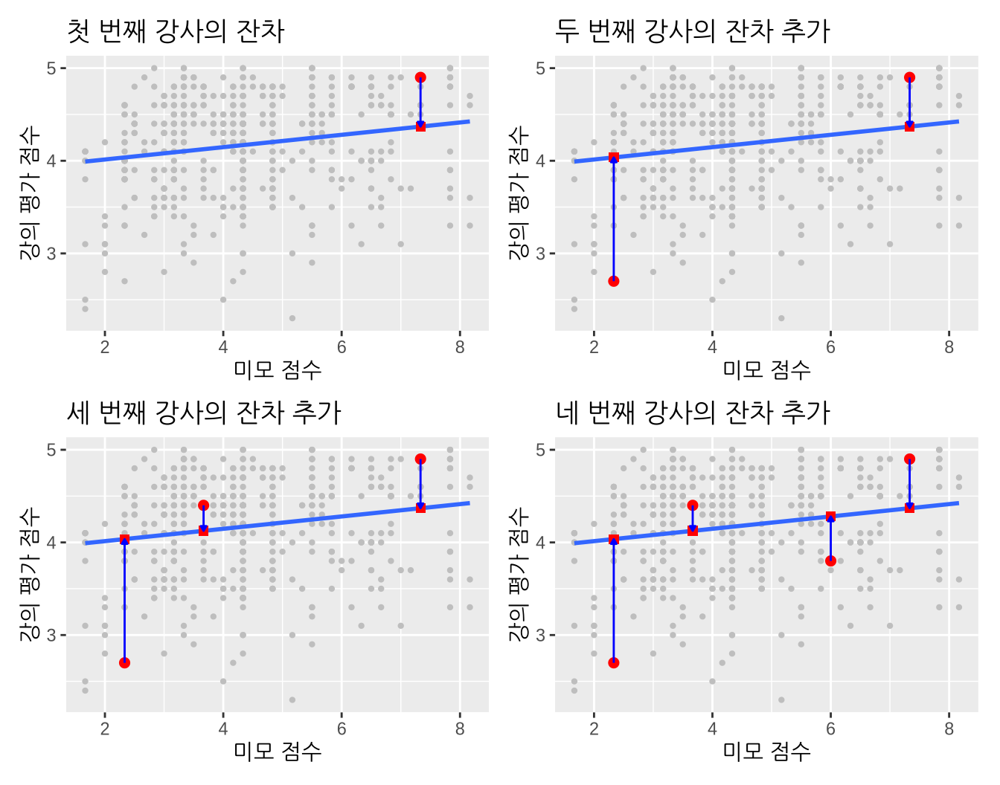
나머지 세 개의 그래프는 다음을 나타냅니다.
- “미모” 점수 \(x\) = 2.333, 강의 평가 점수 \(y\) = 2.7인 강사. 이 경우 잔차는 \(2.7 - 4.036 = -1.336\)이며, 오른쪽 상단 그래프에 새로운 파란색 화살표로 표시했습니다.
- “미모” 점수 \(x = 3.667\), 강의 평가 점수 \(y = 4.4\)인 강사. 이 경우 잔차는 \(4.4 - 4.125 = 0.2753\)이며, 왼쪽 하단 그래프에 새로운 파란색 화살표로 표시했습니다.
- “미모” 점수 \(x = 6\), 강의 평가 점수 \(y = 3.8\)인 강사. 이 경우 잔차는 \(3.8 - 4.28 = -0.4802\)이며, 오른쪽 하단 그래프에 새로운 파란색 화살표로 표시했습니다.
이제 모든 463개 강의에 대해 잔차를 계산하고, 그 잔차들을 모두 제곱한 뒤 합산하는 과정을 반복한다고 가정해 봅시다. 우리는 이 값을 잔차 제곱합(sum of squared residuals) 이라고 부르며, 이는 모델이 데이터를 얼마나 잘 설명하지 못하는지(lack of fit)를 나타내는 척도입니다. 잔차 제곱합의 값이 클수록 모델의 설명력이 떨어지며, 이는 모델이 데이터에 잘 맞지 않음을 의미합니다.
회귀 직선이 모든 점을 완벽하게 통과한다면 잔차 제곱합은 0이 됩니다. 회귀 직선이 모든 점을 완벽하게 통과한다는 것은 모든 경우에 적합값 \(\widehat{y}\)가 관측값 \(y\)와 같음을 의미하며, 따라서 모든 경우에 잔차 \(y-\widehat{y} = 0\)이 되고, 아무리 많은 0을 더해도 그 합은 0이기 때문입니다.
더불어, 우리가 463개의 점들이 모인 구름 사이로 그을 수 있는 가능한 모든 직선 중에서, 회귀 직선은 이 잔차 제곱합을 최소화하는 직선입니다. 즉, 회귀 분석과 그에 따른 적합값 \(\widehat{y}\)는 다음 잔차 제곱합을 최소화합니다.
\[ \sum_{i=1}^{n}(y_i - \widehat{y}_i)^2 \]
데이터 전처리 장에서 배운 데이터 전처리 도구를 사용하여 잔차 제곱합을 정확하게 계산해 봅시다.
# 회귀 모델 적합:
score_model <- lm(score ~ bty_avg,
data = evals_ch5)
# 회귀 포인트 추출:
regression_points <- get_regression_points(score_model)
regression_points# A tibble: 463 × 5
ID score bty_avg score_hat residual
<int> <dbl> <dbl> <dbl> <dbl>
1 1 4.7 5 4.21 0.486
2 2 4.1 5 4.21 -0.114
3 3 3.9 5 4.21 -0.314
4 4 4.8 5 4.21 0.586
5 5 4.6 3 4.08 0.52
6 6 4.3 3 4.08 0.22
7 7 2.8 3 4.08 -1.28
8 8 4.1 3.33 4.10 -0.002
9 9 3.4 3.33 4.10 -0.702
10 10 4.5 3.17 4.09 0.409
# ℹ 453 more rows# 잔차 제곱합 계산
regression_points %>%
mutate(squared_residuals = residual^2) %>%
summarize(sum_of_squared_residuals = sum(squared_residuals))# A tibble: 1 × 1
sum_of_squared_residuals
<dbl>
1 132.그림에 그은 다른 어떤 직선도 132보다 큰 잔차 제곱합을 산출할 것입니다. 이는 미적분학과 선형 대수학을 사용하여 증명할 수 있는 수학적으로 보장된 사실입니다. 이것이 선형 회귀 직선의 또 다른 이름이 가장 잘 맞는 직선(best-fitting line) 또는 최소제곱 직선(least-squares line)인 이유입니다. 왜 잔차(즉, 화살표의 길이)를 제곱할까요? 양의 편차와 음의 편차가 동일한 양만큼 발생했을 때 이를 동등하게 취급하기 위해서입니다. (잔차의 절댓값을 취해도 양과 음의 편차를 동등하게 취급할 수 있지만, 잔차를 제곱하는 것은 미분을 구하고 함수를 최소화하는 미적분학적 이유 때문입니다. 더 자세히 배우고 싶다면 수리 통계학 교과서를 참고하시기 바랍니다.)
학습 확인
(LC5.8) 그림 ?fig-three-lines 에는 세 개의 점이 찍혀 있고 다음과 같은 선들이 있습니다.
- 실선: “가장 잘 맞는” 회귀 직선
- 임의로 선택된 점선
- 또 다른 임의로 선택된 파선
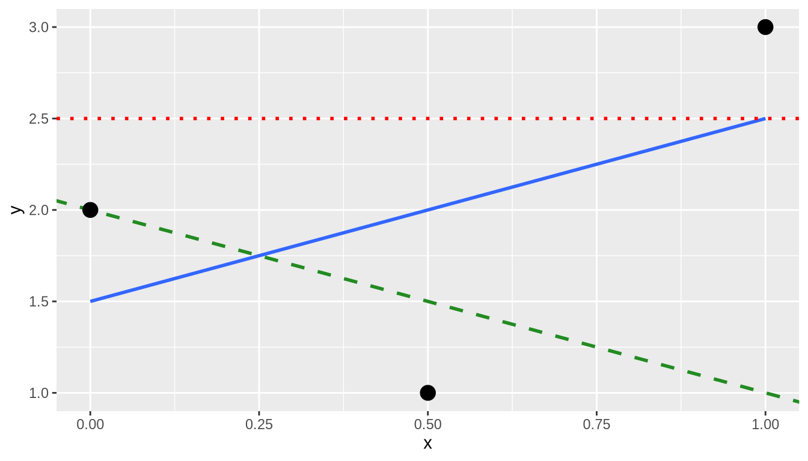
각 직선에 대해 손으로 잔차 제곱합을 계산하고, 이 세 직선 중 회귀 직선의 값이 가장 작음을 보여주세요.
get_regression_x() 함수들
이 장에서 우리는 moderndive 패키지의 두 가지 함수를 소개했음을 떠올려 보세요.
- 단순 선형 회귀 절에서 회귀 표를 반환하는
get_regression_table() - 관측값/적합값과 잔차 절에서 회귀 모델로부터 각 포인트별 정보를 반환하는
get_regression_points()
get_regression_table()과 get_regression_points() 함수의 내부에서는 어떤 일이 벌어지고 있을까요? 우리는 단순 선형 회귀 절에서 이 함수들이 래퍼 함수(wrapper functions)의 예라고 언급했습니다. 이러한 함수들은 기존에 존재하던 다른 함수들을 가져와서, 사용자가 내부 작동 방식을 일일이 알 필요 없도록 하나의 함수로 “감싸(wrap)” 안으로 숨깁니다. 이렇게 하면 사용자는 입력값이 무엇인지, 그리고 출력 결과가 어떠해야 하는지만 신경 쓰면 됩니다. 이번 소섹션에서는 이 함수들의 “내부를 들여다보고(get under the hood)” 래퍼 함수의 “엔진”이 어떻게 작동하는지 살펴보겠습니다.
단순 선형 회귀 절에서 회귀 표를 생성하기 위해 거쳤던 2단계 과정을 떠올려 보세요.
# 회귀 모델 적합:
score_model <- lm(formula = score ~ bty_avg, data = evals_ch5)
# 회귀 표 추출:
get_regression_table(score_model)| term | estimate | std_error | statistic | p_value | lower_ci | upper_ci |
|---|---|---|---|---|---|---|
| intercept | 3.880 | 0.076 | 50.96 | 0 | 3.731 | 4.030 |
| bty_avg | 0.067 | 0.016 | 4.09 | 0 | 0.035 | 0.099 |
get_regression_table() 래퍼 함수는 다른 R 패키지에 있는 다음 두 가지 함수를 가져와서 사용합니다.
- [
broom패키지](https://broom.tidyverse.org/ (Robinson et al. 2026)의tidy() - [
janitor패키지](https://github.com/sfirke/janitor (Firke 2024)의clean_names()
그리고 이들을 단일 함수로 “감싸서” 저장된 lm() 선형 모델(여기서는 score_model)을 입력받아 “정돈된(tidy)” 데이터 프레임 형태의 회귀 표를 반환합니다. 다음은 tidy()와 clean_names() 함수를 사용하여 표 ?tbl-regtable-broom 를 생성하는 방법입니다.
library(broom)
library(janitor)
score_model %>%
tidy(conf.int = TRUE) %>%
mutate_if(is.numeric, round, digits = 3) %>%
clean_names() %>%
rename(lower_ci = conf_low, upper_ci = conf_high)| term | estimate | std_error | statistic | p_value | lower_ci | upper_ci |
|---|---|---|---|---|---|---|
| (Intercept) | 3.880 | 0.076 | 50.96 | 0 | 3.731 | 4.030 |
| bty_avg | 0.067 | 0.016 | 4.09 | 0 | 0.035 | 0.099 |
이런! 코드가 꽤 길군요! 그래서 여러분의 수고를 덜어드리기 위해, 저희는 모든 코드를 get_regression_table() 안에 “감싸서” 여러분이 함수의 내부 작동 방식을 이해해야 하는 부담에서 벗어나도록 결정했습니다. 참고로 mutate_if() 함수는 dplyr 패키지의 함수로, 수치형 변수들에 대해서만 round() 함수를 적용하여 소수점 셋째 자리까지 반올림합니다.
마찬가지로 get_regression_points() 함수도 또 다른 래퍼 함수입니다. 이번에는 회귀 모델과 관련된 각 포인트의 정보인 적합값, 관측값, 잔차를 반환합니다. get_regression_points() 는 get_regression_table()에서 사용한 tidy() 함수 대신 broom 패키지의 augment() 함수를 사용하여 표 ?tbl-regpoints-augment 와 같은 데이터를 생성합니다.
library(broom)
library(janitor)
score_model %>%
augment() %>%
mutate_if(is.numeric, round, digits = 3) %>%
clean_names() %>%
select(-c("std_resid", "hat", "sigma", "cooksd", "std_resid"))| score | bty_avg | fitted | resid |
|---|---|---|---|
| 4.7 | 5.00 | 4.21 | 0.486 |
| 4.1 | 5.00 | 4.21 | -0.114 |
| 3.9 | 5.00 | 4.21 | -0.314 |
| 4.8 | 5.00 | 4.21 | 0.586 |
| 4.6 | 3.00 | 4.08 | 0.520 |
| 4.3 | 3.00 | 4.08 | 0.220 |
| 2.8 | 3.00 | 4.08 | -1.280 |
| 4.1 | 3.33 | 4.10 | -0.002 |
| 3.4 | 3.33 | 4.10 | -0.702 |
| 4.5 | 3.17 | 4.09 | 0.409 |
이 경우 회귀 분석을 배우는 학생들에게 꼭 필요한 변수들만 출력합니다. 결과 변수 \(y\) (score), 모든 설명/예측 변수 (bty_avg), 회귀 직선 방정식을 bty_avg에 적용하여 계산된 모든 fitted 값 \(\hat{y}\), 그리고 잔차 resid (\(y - \hat{y}\))입니다.
이 함수들과 다른 래퍼 함수들이 어떻게 작동하는지 더 궁금하시다면, GitHub에서 해당 함수들의 소스 코드를 살펴보시기 바랍니다.
결론
추가 자료
이 장에서 사용된 모든 R 코드의 R 스크립트 파일은 여기에서 이용 가능합니다.
탐색적 데이터 분석 절에서 제안했듯이, -1, 0, 1과 같은 극단적인 값에서 멀어진 상관계수를 해석하는 것은 다소 주관적일 수 있습니다. 상관계수에 대한 감각을 키우는 데 도움을 주기 위해, http://guessthecorrelation.com/에서 제공하는 80년대 스타일의 비디오 게임인 “Guess the Correlation(상관계수 맞추기)”을 해보시길 권장합니다.
(ref:guess-corr) “Guess the Correlation” 게임 미리보기.
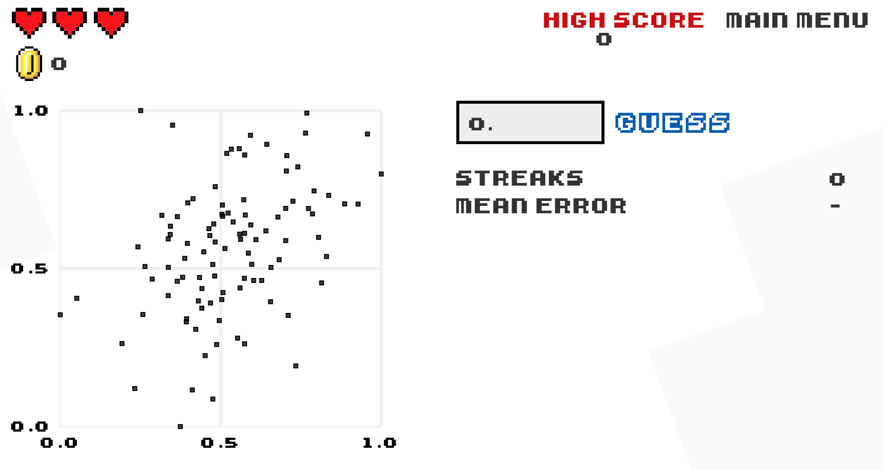
다음에는 무엇을 배울까요?
이 장에서는 하나의 설명 변수만을 사용하는 모델을 적합시키는 기초 회귀(basic regression)에 대해 공부했습니다. 다중 회귀 분석 장에서는 두 개 이상의 설명 변수를 가질 수 있는 다중 회귀(multiple regression)에 대해 배울 것입니다! 특히 두 가지 시나리오를 다룰 것입니다. 하나는 수치형 설명 변수와 범주형 설명 변수를 각각 하나씩 사용하는 회귀 모델이고, 다른 하나는 두 개의 수치형 설명 변수를 사용하는 모델입니다. 이를 통해 결과 변수 \(y\)를 더 잘 설명할 수 있는 더욱 정교하고 강력한 모델을 구축할 수 있게 될 것입니다.